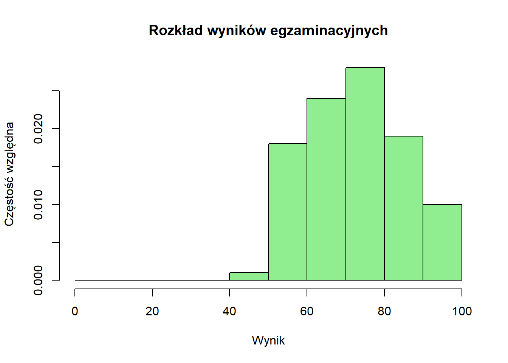
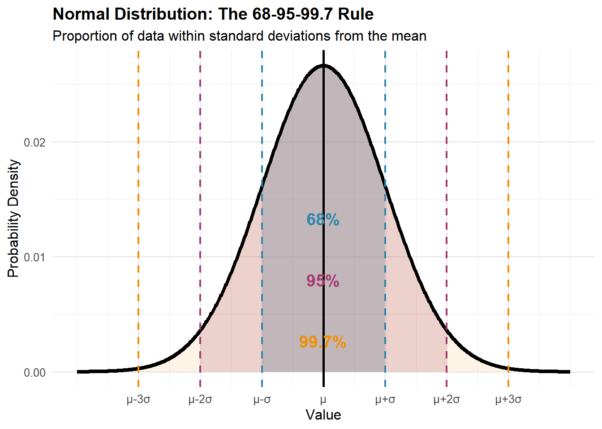

Statystyka to nauka o uczeniu się z danych w warunkach niepewności.
Statystyka jest sposobem poznawania świata na podstawie danych. Uczy nas, jak mądrze zbierać dane, dostrzegać wzorce, szacować parametry (cechy) populacyjne i dokonywać prognoz — określając, jak bardzo możemy się mylić.
Statystyka to nauka o zbieraniu, organizowaniu, analizowaniu, interpretowaniu i prezentowaniu danych. Obejmuje zarówno metody pracy z danymi, jak i teoretyczne podstawy uzasadniające te metody. Ale statystyka to coś więcej niż tylko liczby i wzory — to sposób myślenia o niepewności i zmienności w otaczającym nas świecie.
Wyobraź sobie, że chcesz poznać średni wiek przy pierwszym małżeństwie w danym kraju. Nie możesz zapytać każdej pojedynczej osoby, kiedy po raz pierwszy wstąpiła w związek małżeński (jeśli w ogóle).
Statystyka dostarcza narzędzi do:
Demografia to nauka zajmująca się badaniem ludności, koncentrująca się na jej wielkości, strukturze, rozmieszczeniu i zmianach zachodzących w czasie. To zasadniczo analiza statystyczna populacji - kim są ludzie, gdzie mieszkają, ilu ich jest i jak te charakterystyki ewoluują.
Statystyka i demografia to powiązane ze sobą dyscypliny, które dostarczają narzędzi do zrozumienia populacji, ich charakterystyk i wzorców wyłaniających się z danych.
Gdy w mediach słyszysz, że „bezrobocie spadło o 2”, czy chodzi o 2 punkty procentowe (pp), czy 2 procent?
To nie to samo:
Zawsze pytaj:
Prosta zasada
Mała ściąga
| Stopa początkowa | „Spadek o 2%” (względny) | „Spadek o 2 pp” (absolutny) |
|---|---|---|
| 6% | 6% × 0,98 = 5,88% (−0,12 pp) | 4% |
| 8% | 8% × 0,98 = 7,84% (−0,16 pp) | 6% |
| 10% | 10% × 0,98 = 9,8% (−0,2 pp) | 8% |
Uwaga: 2% ≠ 2 punkty procentowe (pp).
Zasada główna: O ile nie podano inaczej, części ułamkowe liczb dziesiętnych zaokrąglaj do co najmniej 2 cyfr znaczących. W statystyce często pracujemy z długimi częściami ułamkowymi i bardzo małymi liczbami — w obliczeniach, nie zaokrąglaj nadmiernie w krokach pośrednich, zaokrąglaj na końcu obliczeń.
Część ułamkowa to cyfry po przecinku dziesiętnym. W statystyce szczególnie ważne jest zachowanie odpowiedniej precyzji:
Statystyki opisowe:
Bardzo małe liczby (p-wartości, prawdopodobieństwa):
W części ułamkowej cyfry znaczące to wszystkie cyfry oprócz zer wiodących:
⚠️ UWAGA: Nie zaokrąglaj do zera!
W statystyce często spotykamy bardzo małe liczby. Używaj notacji naukowej gdy ułatwia to odczyt:
P-wartości i prawdopodobieństwa:
Bardzo małe odchylenia standardowe:
Duże liczby (rzadko w podstawowej statystyce):
Wątpliwości: Lepiej zachować dodatkową cyfrę niż zaokrąglić zbyt mocno
Dziedzinę statystyki można ogólnie podzielić na dwie uzupełniające się gałęzie:
Statystyka opisowa obejmuje metody podsumowywania i prezentowania danych. Obejmuje to:
Miary tendencji centralnej - Gdzie znajduje się “centrum” (średnia) zbioru danych?
Miary zmienności - Jak rozrzucone/zróżnicowane są dane?
Reprezentacje wizualne (przykłady)
Wnioskowanie statystyczne to szacowanie efektów na podstawie próby i określanie, jak bardzo te wyniki są niepewne. Stosujemy je w eksperymentach (porównanie grup), w modelach regresji (współczynniki opisujące związek między zmiennymi) oraz w sondażach, gdzie z próby wnioskujemy o populacji (np. odsetki/średnie) i podajemy margines błędu oraz przedział ufności.

Rozważmy kucharza przygotowującego zupę dla 100 osób, który musi ocenić jej smak bez konsumowania całego garnka:
Populacja: Cały garnek zupy (100 porcji)
Próba: Jedna łyżka do spróbowania
Parametr populacji: Prawdziwy średni poziom słoności całego garnka (nieznany)
Statystyka z próby: Poziom słoności wykryty w łyżce (obserwowalny)
Wnioskowanie statystyczne: Używanie charakterystyk łyżki do wyciągania wniosków o całym garnku
1. Losowe próbkowanie jest niezbędne: Kucharz musi dokładnie wymieszać zupę przed pobraniem próbki. Konsekwentne pobieranie próbek z powierzchni może pominąć przyprawy, które osiadły, wprowadzając systematyczne obciążenie.
2. Wielkość próby wpływa na precyzję: Większa łyżka dostarcza bardziej wiarygodnych informacji o ogólnym smaku niż mały łyk, choć np. koszty i czas ograniczają możliwość dowolnego zwiększania próby.
3. Niepewność jest nieodłączna: Nawet przy właściwej technice próbkowania (sampling), łyżka może nie reprezentować idealnie charakterystyk całego garnka.
4. Systematyczne obciążenie/stronniczość (bias) podważa wnioskowanie: Jeśli ktoś potajemnie doda sól tylko do obszaru próbkowania, wnioski o całym garnku stają się nieważne — ilustrując, jak obciążenie próbkowania zniekształca wnioskowanie statystyczne.
5. Wnioskowanie ma ograniczenia zakresu: Próba może oszacować średnią słoność, ale nie może ujawnić, czy niektóre części są bardziej słone niż inne, podkreślając granice tego, co próby mogą nam powiedzieć o zmienności w populacji.
Ta analogia chwyta istotę rozumowania statystycznego: używanie starannie wybranych prób do poznawania większych populacji przy jednoczesnym jawnym uznawaniu i kwantyfikacji nieodłącznej niepewności w tym procesie.
Na przykład, jeśli badanie 1000 gospodarstw domowych stwierdza, że 23% obejmuje trzy pokolenia mieszkające razem, statystyka inferencyjna pomaga nam:
Podstawowa zasada: Statystyka nie eliminuje niepewności — pomaga nam ją mierzyć, zarządzać nią i skutecznie komunikować.
Władze uniwersytetu rozważają udostępnienie biblioteki całodobowo. Administracja potrzebuje odpowiedzi na pytanie: Jaka część studentów popiera tę zmianę?
Sytuacja idealna: Zapytanie wszystkich 20 000 studentów → Uzyskanie dokładnej odpowiedzi
Sytuacja rzeczywista: Ankietowanie 100 studentów → Uzyskanie oszacowania z niepewnością
Załóżmy, że przeprowadzono ankietę wśród 100 losowo wybranych studentów i stwierdzono, że 60 z nich popiera całodobowe otwarcie biblioteki.
❌ Bez Myślenia Statystycznego
“60 ze 100 studentów odpowiedziało twierdząco.”
Wniosek: “Dokładnie 60% wszystkich studentów popiera zmianę.”
Decyzja: “Ponieważ przekracza to 50%, mamy wyraźne poparcie większości.”
Problem: Ignorowanie faktu, że inna próba mogłaby dać wynik 55% lub 65%
✅ Z Zastosowaniem Myślenia Statystycznego
“60 ze 100 studentów odpowiedziało twierdząco.”
Wniosek: “Szacujemy poparcie na poziomie 60% z marginesem błędu ±10%”
Decyzja: “Prawdziwe poparcie prawdopodobnie mieści się między 50% a 70% — potrzebujemy większej próby dla pewności większościowego poparcia.”
Przewaga: Uznanie niepewności prowadzi do lepszych decyzji
Myślenie statystyczne nie polega na zmniejszeniu pewności — polega na rzetelnym przedstawieniu niepewności.
Rozważmy następujące scenariusze dla wyniku 60% (±10% margines błędu):
Bez uwzględnienia tego zakresu możemy podejmować kosztowne decyzje oparte na fałszywej precyzji.
Jeśli wymagana jest większa precyzja, należy rozważyć wpływ wielkości próby na poziom ufności:
| Wielkość Próby | Wynik Badania | Margines Błędu | Przedział Ufności | Interpretacja |
|---|---|---|---|---|
| n = 100 | 60% | ±10% | 50% do 70% | Niepewność co do większości |
| n = 400 | 60% | ±5% | 55% do 65% | Prawdopodobne poparcie większości |
| n = 1 600 | 60% | ±2,5% | 57,5% do 62,5% | Wyraźne poparcie większości |
Myślenie statystyczne przekształca stwierdzenie “60 studentów odpowiedziało twierdząco” z pozornie precyzyjnej, lecz wprowadzającej w błąd informacji w rzetelną ocenę: “Z dużym prawdopodobieństwem można stwierdzić, że między 50% a 70% wszystkich studentów popiera tę propozycję.”
Ta ostrożność w formułowaniu wniosków prowadzi do lepszych decyzji.
Analizując dane statystyczne, należy zawsze rozważyć następujące pytania:
Odpowiedzi na te pytania stanowią fundament myślenia statystycznego.
Literary Digest przeprowadził jeden z największych sondaży w historii z 2,4 miliona odpowiedzi, przewidując, że Alf Landon pokona Franklina D. Roosevelta w wyborach prezydenckich w 1936 roku.
Pomimo ogromnej wielkości próby:
Przewidywanie: Landon 57%, Roosevelt 43% Rzeczywisty wynik: Roosevelt 62%, Landon 38% Błąd: 25 punktów procentowych!
Co poszło nie tak? Sondaż był wadliwy z powodu systematycznego błędu/obciążenia (bias):
Obciążenie selekcyjne (selection bias) w ramce/operacie losowania:
Obciążenie braku odpowiedzi:
Kluczowe wnioski:
Ta katastrofa doprowadziła do znacznych ulepszeń w metodologii sondażowej, w tym rozwoju losowania probabilistycznego i śledzenia wskaźników odpowiedzi.
Dzisiejsze sondaże, choć znacznie mniejsze niż 2,4 miliona odpowiedzi Literary Digest, są zwykle znacznie dokładniejsze, ponieważ koncentrują się na:
Reprezentatywnym losowaniu: Używanie metod opartych na prawdopodobieństwie, aby zapewnić wszystkim grupom znane szanse selekcji
Wykrywanie i korekcja obciążenia: Monitorowanie wskaźników odpowiedzi w różnych grupach demograficznych i korygowanie znanych obciążeń (bias)
Kwantyfikacja niepewności: Raportowanie marginesów błędu (statystyczny błąd losowy), które uczciwie komunikują granice tego, co wiemy
Przykład: Współczesny sondaż 1000 losowo wybranych wyborców z 3% marginesem błędu jest zwykle znacznie bardziej wiarygodny niż masywne, ale obciążone badanie Literary Digest.
Dane: Informacje zebrane podczas badania – obejmują odpowiedzi z ankiet, wyniki eksperymentów, wskaźniki ekonomiczne, treści z mediów społecznościowych lub wszelkie inne mierzalne obserwacje.
Zrozumienie typów danych i rozkładów jest fundamentalne dla wyboru odpowiednich analiz i poprawnej interpretacji wyników.
Obserwacje na zmiennych (kolumny w bazie danych) zebrane w jednym punkcie czasowym dla wielu podmiotów:
| Osoba | Wiek | Dochód | Wykształcenie |
|---|---|---|---|
| 1 | 25 | 5000 | Licencjat |
| 2 | 35 | 7500 | Magister |
| 3 | 45 | 9000 | Doktorat |
Obserwacje jednego podmiotu w kolejnych punktach czasowych:
| Rok | PKB (w mld) | Stopa Bezrobocia |
|---|---|---|
| 2018 | 20.580 | 3,9% |
| 2019 | 21.433 | 3,7% |
| 2020 | 20.933 | 8,1% |
Obserwacje wielu podmiotów w czasie:
| Kraj | Rok | PKB per capita | Długość życia |
|---|---|---|---|
| Polska | 2018 | 32.794 | 76,7 |
| Polska | 2019 | 35.118 | 76,8 |
| Niemcy | 2018 | 46.194 | 81,9 |
| Niemcy | 2019 | 46.194 | 82,0 |
Szczególny przypadek danych panelowych gdzie:
Każdy wiersz to podmiot; kolumny to zmienne/punkty czasowe:
| Kraj | PKB_2018 | PKB_2019 | DŻ_2018 | DŻ_2019 |
|---|---|---|---|---|
| Polska | 32.794 | 35.118 | 76,7 | 76,8 |
| Niemcy | 46.194 | 46.194 | 81,9 | 82,0 |
Każdy wiersz to unikalna kombinacja podmiot-czas-zmienna:
| Kraj | Rok | Zmienna | Wartość |
|---|---|---|---|
| Polska | 2018 | PKB per capita | 32.794 |
| Polska | 2019 | PKB per capita | 35.118 |
| Polska | 2018 | Długość życia | 76,7 |
| Polska | 2019 | Długość życia | 76,8 |
| Niemcy | 2018 | PKB per capita | 46.194 |
| Niemcy | 2019 | PKB per capita | 46.194 |
| Niemcy | 2018 | Długość życia | 81,9 |
| Niemcy | 2019 | Długość życia | 82,0 |
Uwaga: Format długi jest zazwyczaj preferowany do:
Dane składają się z zebranych obserwacji lub pomiarów. Typ danych określa, jakie operacje matematyczne są wykonalne i jakie metody statystyczne mają zastosowanie.
Dane ciągłe mogą przyjmować dowolną wartość w przedziale:
Przykłady o znaczeniu demograficznym:
Właściwości:
Dane dyskretne mogą przyjmować tylko określone wartości:
Przykłady:
Dane nominalne reprezentują kategorie bez naturalnego porządku:
Przykłady:
Co możemy zrobić:
Czego nie możemy zrobić:
Dane porządkowe reprezentują uporządkowane kategorie:
Przykłady:
Uwaga: Interwały między kategoriami niekoniecznie są równe. „Odległość” od Złego do Przeciętnego zdrowia może nie równać się odległości od Dobrego do Doskonałego.
Rozkład danych opisuje, jak wartości rozkładają się na możliwe wyniki (jakie wartości cecha przyjmuje i jak często). Rozkłady mówią nam, jakie wartości są powszechne, jakie wartości są rzadkie i jakie wzorce istnieją w naszych danych.
Charakterystyki kształtu:
Symetria vs. Skośność:
Przykład wpływu skośności:
Rozkład dochodu w USA:
Modalność:
Ważne rozkłady prawdopodobieństwa:
Rozkład normalny (Gaussa):
Zastosowania demograficzne:
Rozkład dwumianowy:
Przykład: Liczba urodzeń chłopców na 100 urodzeń (p \approx 0,512)
Rozkład Poissona:
Zastosowania demograficzne:
Rozkład częstości pokazuje, jak często każda wartość występuje w zbiorze danych. To często pierwszy krok w zrozumieniu twoich danych.
Częstość bezwzględna: Liczba obserwacji dla każdej wartości.
Częstość względna: Proporcja w każdej kategorii. \text{Częstość względna} = \frac{\text{Liczba}}{\text{Suma}}
Częstość skumulowana: Suma bieżąca do każdej wartości.
Szczegółowy przykład: Rozkład wieku w badaniu zdrowotnym społeczności 200 osób:
| Grupa wiekowa | Częstość bezwzględna | Częstość względna | Częstość skumulowana | Skumulowana % |
|---|---|---|---|---|
| 0-9 | 24 | 0,12 | 24 | 12% |
| 10-19 | 28 | 0,14 | 52 | 26% |
| 20-29 | 35 | 0,175 | 87 | 43,5% |
| 30-39 | 32 | 0,16 | 119 | 59,5% |
| 40-49 | 30 | 0,15 | 149 | 74,5% |
| 50-59 | 25 | 0,125 | 174 | 87% |
| 60-69 | 16 | 0,08 | 190 | 95% |
| 70+ | 10 | 0,05 | 200 | 100% |
Co to nam mówi:
Histogram: Dla danych ciągłych, pokazuje częstość wysokościami słupków.
Masz rację! Oto poprawiona, bardziej naturalna wersja po polsku:
Wyobraź sobie, że sortujesz dane do koszyków:
Załóżmy, że porównujesz wzrost 50 osób z próbą 5000 osób. Gdybyś używał zwykłych zliczeń, drugi histogram byłby olbrzymi! Gęstość przeskalowuje dane tak, żebyś mógł porównywać kształty rozkładów niezależnie od tego, ile masz obserwacji.
Przechodząc z częstości na gęstość, tak naprawdę pytamy: “Jaki ułamek danych przypada tu w przeliczeniu na jednostkę?”
Przykład dla jednego słupka:
⚠️ Uwaga: Gęstość to NIE jest prawdopodobieństwo! To prawdopodobieństwo na jednostkę (np. na centymetr). Żeby dostać prawdopodobieństwo, musisz pomnożyć gęstość przez szerokość słupka.
Wzór jest prosty: \text{Gęstość} = \frac{\text{Liczba obserwacji w słupku}}{\text{Wszystkie obserwacje} \times \text{Szerokość słupka}}
Kiedy pomnożysz gęstość przez szerokość słupka, dostajesz prawdopodobieństwo: \text{Prawdopodobieństwo} = \text{Gęstość} \times \text{Szerokość słupka}
Suma wszystkich prawdopodobieństw (pól słupków) daje 1!
ggplot(heights, aes(x = height)) +
geom_histogram(binwidth = 5, boundary = 0, color = "white", fill = "steelblue") +
labs(title = "Histogram częstości",
x = "Wzrost (cm)",
y = "Liczba osób")
ggplot(heights, aes(x = height)) +
geom_histogram(aes(y = after_stat(density)),
binwidth = 5, boundary = 0,
color = "white", fill = "steelblue", alpha = 0.7) +
geom_density(linewidth = 1, color = "darkred") +
labs(title = "Histogram gęstości z wygładzoną krzywą",
x = "Wzrost (cm)",
y = "Gęstość (prawdopodobieństwo/cm)")
Weźmy przedział 170-175 cm i zobaczmy, jak to działa:
# Liczymy osoby między 170 a 175 cm
osoby_170_175 <- sum(heights$height >= 170 & heights$height < 175)
wszystkie_osoby <- nrow(heights)
szerokosc <- 5
# Obliczamy gęstość i prawdopodobieństwo
gestosc <- osoby_170_175 / (wszystkie_osoby * szerokosc)
prawdopodobienstwo <- gestosc * szerokosc # Pole = prawdopodobieństwo
cat("Osób w przedziale [170, 175) cm:", osoby_170_175, "\n")Osób w przedziale [170, 175) cm: 79 cat("Gęstość (wysokość słupka):", round(gestosc, 4), "na cm\n")Gęstość (wysokość słupka): 0.0316 na cmcat("Prawdopodobieństwo (pole słupka):", round(prawdopodobienstwo, 3),
"czyli", round(prawdopodobienstwo * 100, 1), "%\n")Prawdopodobieństwo (pole słupka): 0.158 czyli 15.8 %cat("\nSprawdzenie: Gęstość × Szerokość =", round(gestosc, 4),
"×", szerokosc, "=", round(prawdopodobienstwo, 3))
Sprawdzenie: Gęstość × Szerokość = 0.0316 × 5 = 0.158To jak gęstość zaludnienia:
Tak samo w histogramach:
Dla każdego słupka histogramu:
Wykres słupkowy: Dla danych kategorycznych, pokazuje częstość z oddzielonymi słupkami.
Dystrybuanta (Funkcja Rozkładu Skumulowanego): Pokazuje proporcję wartości ≤ każdego punktu danych. - Zawsze rośnie (lub pozostaje płaska) - Zaczyna się od 0, kończy na 1 - Strome nachylenia wskazują na częste wartości - Płaskie obszary wskazują na rzadkie wartości
Wykres Pudełkowy (Wykres Skrzynkowy): Wizualne podsumowanie, które przedstawia kluczowe statystyki rozkładu przy użyciu pięciu kluczowych wartości.
Podsumowanie Pięciu Liczb:
Co Pokazuje:
Szybka Interpretacja:
Wykresy pudełkowe są szczególnie użyteczne do porównywania wielu grup obok siebie!
Zrozumienie rozróżnienia między populacjami a próbami jest kluczowe dla właściwej analizy statystycznej. To rozróżnienie wpływa na każdy aspekt naszej analizy, od zbierania danych po interpretację wyników.
Populacja to kompletny zbiór jednostek, obiektów lub pomiarów, o których chcemy wyciągnąć wnioski. Kluczowe słowo to „kompletny” — populacja obejmuje każdego pojedynczego członka grupy, którą badamy.
Przykłady populacji w demografii:
Populacje mogą być:
Skończone (Finite): Mające policzalną liczbę członków (wszyscy obecni obywatele Polski, wszytkie gminy w Polsce w 2024 r.)
Nieskończone (Infinite): Teoretyczne lub niepoliczalnie duże (wszystkie możliwe przyszłe urodzenia)
Stałe (Fixed): Zdefiniowane w określonym punkcie czasu (wszyscy mieszkańcy w dniu spisu)
Dynamiczne (Dynamic): Zmieniające się w czasie (populacja miasta doświadczająca urodzeń, zgonów i migracji codziennie)
Próba to podzbiór populacji, który jest faktycznie obserwowany lub mierzony. Badamy próby, ponieważ badanie całych populacji jest często niemożliwe, niepraktyczne lub niepotrzebne.
Dlaczego używamy prób:
Praktyczna niemożliwość: Wyobraź sobie testowanie każdej osoby w Chinach na obecność pewnej choroby. Zanim skończyłbyś testować 1,4 miliarda ludzi, sytuacja chorobowa całkowicie by się zmieniła, a niektórzy ludzie testowani wcześnie wymagaliby ponownego testowania.
Względy kosztowe: Amerykański spis powszechny z 2020 roku kosztował około 16 miliardów dolarów. Przeprowadzanie tak kompletnych wyliczeń często byłoby zbyt kosztowne.
Ograniczenia czasowe: Decydenci często potrzebują informacji szybko. Badanie ankietowe 10 000 osób można ukończyć w ciągu tygodni, podczas gdy spis wymaga lat planowania, wykonania i przetwarzania.
Pomiar destrukcyjny: Niektóre pomiary niszczą to, co jest mierzone. Testowanie żywotności żarówek wymaga użycia prób.
Większa dokładność: Co zaskakujące, próby mogą czasem być dokładniejsze niż badania pełne. Z próbą można pozwolić sobie na lepsze szkolenie ankieterów, bardziej staranne zbieranie danych i dokładniejsze kontrole jakości.
Przykład próby vs. populacja:
Powiedzmy, że chcemy poznać średnią wielkość gospodarstwa domowego w Warszawie:
Superpopulacja to teoretyczna nieskończona populacja, z której twoja skończona populacja jest traktowana jako jedna losowa próba.
Pomyśl o tym w trzech poziomach:
Dlaczego potrzebujemy tego pojęcia?
Rozważmy 50 stanów USA. Możesz zmierzyć stopę bezrobocia dla wszystkich 50 stanów — pełny spis, bez próbkowania. Ale nadal chcesz:
Bez koncepcji superpopulacji utkniesz — masz wszystkie dane, więc co pozostaje do wnioskowania? Odpowiedź: traktuj tegoroczne 50 wartości jako jedno losowanie z nieskończonej superpopulacji możliwych wartości, które mogłyby wystąpić w podobnych warunkach.
Reprezentacja matematyczna:
Proces Generowania Danych (DGP) to rzeczywisty mechanizm, który tworzy twoje dane — włączając wszystkie czynniki, relacje i elementy losowe.
Intuicyjny przykład: Załóżmy, że wyniki testów uczniów są naprawdę generowane przez:
\text{Wynik}_i = 50 + 2(\text{GodzinyNauki}_i) + 3(\text{GodzinySnu}_i) - 5(\text{Stres}_i) + 1.5(\text{Śniadanie}_i) + \epsilon_i
To jest PRAWDZIWY DGP. Ale ty tego nie wiesz! Możesz estymować:
\text{Wynik}_i = \alpha + \beta(\text{GodzinyNauki}_i) + u_i
Twój model jest prostszy niż rzeczywistość. Brakuje ci zmiennych (sen, stres, śniadanie), więc twoje oszacowania mogą być obciążone (biased). Składnik u_i zawiera wszystko, co pominąłeś.
Kluczowa intuicja: Nigdy nie znamy prawdziwego DGP. Nasze modele statystyczne są zawsze przybliżeniami, próbującymi uchwycić najważniejsze części nieznanej, złożonej prawdy.
Analizując dane, szczególnie z badań czy prób, możemy przyjąć dwa filozoficzne podejścia:
Które jest lepsze?
Załóżmy, że zbierasz wydatki na edukację per uczeń dla wszystkich 50 stanów USA.
Bez myślenia superpopulacyjnego:
Z myśleniem superpopulacyjnym:
Kluczowa intuicja: Nawet z kompletnymi danymi, ramy superpopulacji umożliwiają wnioskowanie statystyczne poprzez traktowanie obserwowanych wartości jako jednego możliwego wyniku z podstawowego procesu stochastycznego.
Superpopulacja: Traktuje twoją populację skończoną jako jedno losowanie z nieskończonej przestrzeni możliwości — niezbędne, gdy twoja populacja skończona jest mała lub całkowicie obserwowana
DGP: Prawdziwy (nieznany) proces tworzący twoje dane — twoje modele próbują go przybliżyć
Zanim zagłębimy się w populacje i próby, musimy zrozumieć typy zmiennych, z którymi pracujemy i jak je mierzymy.
Zmienna to każda charakterystyka, która może przyjmować różne wartości dla różnych jednostek obserwacji.
Politologia ewoluowała z dyscypliny głównie teoretycznej do takiej, która coraz bardziej opiera się na dowodach empirycznych. Niezależnie od tego, czy badamy:
Potrzebujemy systematycznych sposobów analizowania danych i wyciągania wniosków, które wykraczają poza anegdoty i osobiste wrażenia.
Rozważ to pytanie: “Czy demokracja prowadzi do wzrostu gospodarczego?”
Twoja intuicja może sugerować, że tak - kraje demokratyczne są zazwyczaj bogatsze. Ale czy to przyczynowość, czy korelacja? Czy są wyjątki? Jak pewni możemy być naszych wniosków?
Statystyka dostarcza narzędzi do przejścia od przeczuć do odpowiedzi opartych na dowodach, pomagając nam rozróżnić między tym, co wydaje się prawdziwe, a tym, co rzeczywiście jest prawdziwe.
Korelacja (correlation) mierzy, jak dwie zmienne poruszają się razem:
Przyczynowość (causation) oznacza, że jedna zmienna bezpośrednio wpływa na drugą:
Korelacja pozorna (spurious correlation) występuje, gdy dwie zmienne wydają się powiązane, ale w rzeczywistości obie są pod wpływem trzeciej zmiennej (czynnika zakłócającego/confoundera).
Klasyczny przykład:
Obserwacja: Sprzedaż lodów koreluje z liczbą utonięć
Pozorny wniosek: Lody powodują utonięcia (❌)
Rzeczywistość: Letnia pogoda (czynnik zakłócający) powoduje oba zjawiska:
Lato → Więcej sprzedanych lodów
Lato → Więcej pływania → Więcej utonięć
Reprezentacja matematyczna:
Zmienna zakłócająca (confounding variable/confounder):
Przykład badawczy:
Obserwacja: Spożycie kawy koreluje z chorobami serca
Potencjalny czynnik zakłócający: Palenie (osoby pijące kawę częściej palą)
Prawdziwe relacje:
Palenie → Choroby serca (przyczynowa)
Palenie → Spożycie kawy (związek)
Kawa → Choroby serca (pozorna bez kontroli palenia)
Znalezienie korelacji jest łatwe. Ustalenie przyczynowości jest trudne. Zawsze pytaj: „Co jeszcze mogłoby wyjaśniać ten związek?”
Pamiętaj: Najbardziej niebezpieczne zdanie w badaniach empirycznych to „nasze dane pokazują, że X powoduje Y”, gdy tak naprawdę zmierzyłeś tylko korelację.
Dla każdego scenariusza określ, czy związek jest prawdopodobnie przyczynowy czy pozorny:
W naukach społecznych często zmagamy się z tym, że kluczowe pojęcia nie przekładają się wprost na liczby:
Zmienne ilościowe (Quantitative Variables) reprezentują ilości lub wielkości i mogą być:
Zmienne ciągłe (Continuous Variables): Mogą przyjmować dowolną wartość w przedziale, ograniczoną tylko precyzją pomiaru.
Zmienne dyskretne (Discrete Variables): Mogą przyjmować tylko określone wartości, zazwyczaj liczenia.
Zmienne jakościowe (Qualitative Variables) reprezentują kategorie lub cechy i mogą być:
Zmienne nominalne (Nominal Variables): Kategorie bez naturalnego porządku.
Zmienne porządkowe (Ordinal Variables): Kategorie ze znaczącym porządkiem, ale nierównymi interwałami.
Zrozumienie skal pomiarowych jest kluczowe, ponieważ determinują, które metody statystyczne są odpowiednie:
Skala nominalna (Nominal Scale): Tylko kategorie — możemy liczyć częstości, ale nie możemy porządkować ani wykonywać operacji arytmetycznych. Przykład: Możemy powiedzieć, że 45% mieszkańców urodziło się lokalnie, ale nie możemy obliczyć „średniego miejsca urodzenia”.
Skala porządkowa (Ordinal Scale): Kolejność ma znaczenie, ale różnice między wartościami niekoniecznie są równe. Przykład: Różnica między „złym” a „przeciętnym” zdrowiem może nie równać się różnicy między „dobrym” a „doskonałym” zdrowiem.
Skala interwałowa (Interval Scale): Równe interwały między wartościami, ale brak prawdziwego punktu zerowego. Przykład: Temperatura w stopniach Celsjusza — różnica między 20°C a 30°C równa się różnicy między 30°C a 40°C, ale 0°C nie oznacza „braku temperatury”.
Skala ilorazowa (Ratio Scale): Równe interwały z prawdziwym punktem zerowym, umożliwiające wszystkie operacje matematyczne. Przykład: Dochód — 40 000 zł to dwa razy więcej niż 20 000 zł, a 0 zł oznacza brak dochodu.
Te pojęcia stanowią rdzeń wnioskowania statystycznego — jak uczymy się o populacjach z prób. Zrozumienie relacji między tymi terminami jest niezbędne dla właściwego rozumowania statystycznego.
Parametr to liczbowa charakterystyka populacji. Parametry są zazwyczaj nieznane, ponieważ nie możemy zmierzyć całej populacji. Są to wartości stałe (nie losowe), ale nieznane nam. Oznaczamy parametry literami greckimi.
Powszechne parametry demograficzne:
Przykład: Prawdziwy średni wiek przy pierwszym porodzie dla wszystkich kobiet we Francji, które urodziły dziecko w 2023 roku, jest parametrem. Nazwijmy go \mu = 31,2 lat. Nie znamy tej wartości bez zmierzenia każdego pojedynczego porodu.
Statystyka to liczbowa charakterystyka obliczona z danych z próby. Statystyki są zmiennymi losowymi — ich wartości różnią się od próby do próby. Używamy łacińskich liter dla statystyk.
Powszechne statystyki z próby:
Przykład: Z próby 500 urodzeń we Francji obliczamy średni wiek przy pierwszym porodzie z próby \bar{x} = 30,9 lat. To jest nasza statystyka. Inna próba może dać \bar{x} = 31,4 lat.
Pomyśl o tej relacji jak o próbie zrozumienia głębokości jeziora:
Estymator to reguła lub formuła do obliczania oszacowania parametru populacji z danych z próby. Estymator to funkcja, która odwzorowuje dane z próby na oszacowania parametrów.
Właściwości dobrych estymatorów:
Nieobciążoność (Unbiasedness): Średnio estymator równa się prawdziwej wartości parametru. Gdybyśmy powtórzyli próbkowanie wiele razy, średnia wszystkich naszych oszacowań równałaby się prawdziwemu parametrowi.
Przykład: Średnia z próby \bar{x} jest nieobciążonym estymatorem średniej populacji \mu. Gdybyśmy wzięli 1000 różnych prób i obliczyli 1000 średnich z prób, ich średnia byłaby bardzo bliska \mu.
Zgodność (Consistency): Gdy wielkość próby wzrasta, estymator zbiega się do prawdziwej wartości parametru.
Przykład: Z n=10, nasze oszacowanie średniego dochodu może być oddalone o 5000 zł. Z n=1000, możemy być oddaleni tylko o 500 zł. Z n=100 000, możemy być oddaleni tylko o 50 zł.
Efektywność (Efficiency): Wśród nieobciążonych estymatorów, ten z najmniejszą wariancją. Średnia z próby jest bardziej efektywna niż mediana z próby do estymowania średniej populacji rozkładu normalnego.
Powszechne estymatory:
Uwaga: Dzielimy przez (n-1), a nie n dla wariancji z próby, aby uczynić ją nieobciążoną — to się nazywa korekta Bessela.
Estimand to konkretny parametr populacji, który chcemy oszacować. To cel naszej procedury estymacji. Jasna specyfikacja estimandu jest kluczowa dla właściwego wnioskowania statystycznego i unikania błędnej interpretacji.
Przykłady jasno zdefiniowanych estimandów:
Dlaczego precyzyjna definicja estimandu ma znaczenie:
Rozważ badanie „stopy bezrobocia”. Estimand musi określić:
Różne definicje prowadzą do różnych liczb. Amerykańskie Biuro Statystyki Pracy publikuje sześć różnych stóp bezrobocia (U-1 do U-6) na podstawie różnych definicji.
Oszacowanie to konkretna wartość numeryczna obliczona przez zastosowanie estymatora do obserwowanych danych. To nasze najlepsze przypuszczenie o prawdziwej wartości parametru na podstawie dostępnych informacji.
Przykład kompletnego procesu:
Estimand to konkretna wielkość, którą chcemy oszacować — na co celujemy naszą analizą statystyczną. Choć często jest to parametr populacji, estimandy mogą być bardziej złożone.
Przykłady różnych estimandów:
Prosty estimand parametru: Średni dochód populacji (\mu) Porównawczy estimand: Różnica w średnim dochodzie między dwiema grupami (\mu_1 - \mu_2) Przyczynowy estimand: Średni efekt leczenia programu szkoleniowego na zarobki Warunkowy estimand: Oczekiwana frekwencja wyborcza przy konkretnych warunkach pogodowych
Zrozumienie wnioskowania statystycznego wymaga rozróżnienia między tymi powiązanymi, ale odrębnymi pojęciami:
Przykład w kontekście:
Ta struktura pomaga wyjaśnić dokładnie, na jakie pytanie odpowiadamy i zapewnia, że nasze metody są zgodne z naszymi celami badawczymi.
Żaden pomiar ani oszacowanie nie jest doskonałe. Zrozumienie różnych typów błędów jest kluczowe dla interpretacji wyników i poprawy projektu badania. Ta sekcja bada matematyczne podstawy i praktyczne implikacje niepewności statystycznej.
Za każdym razem, gdy używamy próby do poznania populacji, wprowadzamy niepewność. Kluczem jest:
Błąd losowy wynika z naturalnej zmienności w próbkowaniu — nieuniknionej wariacji, która występuje, ponieważ obserwujemy próbę, a nie całą populację.
Wyobraź sobie badanie 100 losowych gospodarstw domowych o dostępie do internetu:

Zmienność wokół prawdziwej wartości (czerwona linia) reprezentuje błąd losowy. Przy większych próbach oszacowania byłyby bardziej skupione.
Błąd systematyczny reprezentuje stałe odchylenie w określonym kierunku. W przeciwieństwie do błędu losowego, nie uśrednia się przy powtarzanym próbkowaniu.
Metoda próbkowania systematycznie wyklucza pewne grupy.
Przykład: Ankiety telefoniczne w godzinach pracy niedostatecznie reprezentują osoby pracujące.
Instrument pomiarowy konsekwentnie zawyża/zaniża pomiary.
Przykład: Waga, która zawsze pokazuje 1 kg za dużo.
Respondenci systematycznie błędnie raportują.
Przykład: Ludzie zaniżają spożycie alkoholu, zawyżają uczestnictwo w głosowaniu.
Osoby nieudzielające odpowiedzi różnią się systematycznie od respondentów.
Przykład: Bardzo chorzy i bardzo zdrowi ludzie rzadziej odpowiadają na ankiety zdrowotne.
Obserwowanie tylko “ocalałych” z jakiegoś procesu.
Przykład: Badanie długowieczności poprzez wywiady z 90-latkami pomija tych, którzy zmarli młodsi.
Matematycznie, całkowity błąd (Błąd Średniokwadratowy) rozkłada się na:
\mathrm{MSE}(\hat\theta) = \underbrace{\mathrm{Var}(\hat\theta)}_{\text{błąd losowy}} + \underbrace{\big(\mathrm{Bias}(\hat\theta)\big)^2}_{\text{błąd systematyczny}}
Duża obciążona próba daje precyzyjnie błędną odpowiedź.

Błąd standardowy (SE) kwantyfikuje, jak bardzo oszacowanie różni się w różnych możliwych próbach.
Dla Proporcji: SE(\hat{p}) = \sqrt{\frac{\hat{p}(1-\hat{p})}{n}}
Dla Średniej: SE(\bar{x}) = \frac{s}{\sqrt{n}}
Dla Różnicy: SE(\bar{x}_1 - \bar{x}_2) = \sqrt{\frac{s_1^2}{n_1} + \frac{s_2^2}{n_2}}
Margines błędu (MOE) reprezentuje oczekiwaną maksymalną różnicę między oszacowaniem z próby a prawdziwym parametrem.
\text{MOE} = \text{Wartość Krytyczna} \times \text{Błąd Standardowy}
Dla 95% ufności używamy 1,96 (często upraszczane do 2). To zapewnia, że ~95% przedziałów skonstruowanych w ten sposób będzie zawierać prawdziwy parametr.
Przedział ufności dostarcza zakres prawdopodobnych wartości:
\text{CI} = \text{Oszacowanie} \pm (\text{Wartość Krytyczna} \times \text{Błąd Standardowy})
Gdy sondaż podaje “Kandydat A: 52%, Kandydat B: 48%”, jest to niepełne bez kwantyfikacji niepewności.
Przy ~1000 losowo wybranych respondentach:
| Wielkość Próby | Margines Błędu (95%) | Zastosowanie |
|---|---|---|
| n = 100 | ± 10% | Tylko ogólny kierunek |
| n = 400 | ± 5% | Ogólne trendy |
| n = 1000 | ± 3% | Standardowe sondaże |
| n = 2500 | ± 2% | Wysoka precyzja |
| n = 10000 | ± 1% | Bardzo wysoka precyzja |
Aby zmniejszyć margines błędu o połowę, potrzebujesz cztery razy większej próby, ponieważ \text{MOE} \propto 1/\sqrt{n}
Wysokiej jakości sondaże muszą ujawniać:
Poniższa symulacja pokazuje, jak zachowują się przedziały ufności przy powtarzanym próbkowaniu:
library(ggplot2)
set.seed(42)
# Parametry
n_polls <- 20
n_people <- 100
true_support <- 0.50
# Symulacja niezależnych sondaży
support <- rbinom(n_polls, n_people, true_support) / n_people
# Obliczanie błędów standardowych i marginesów błędu
se <- sqrt(support * (1 - support) / n_people)
moe <- 2 * se # Uproszczony mnożnik dla jasności
# Tworzenie przedziałów ufności
lower <- pmax(0, support - moe)
upper <- pmin(1, support + moe)
# Sprawdzanie pokrycia
covers <- (lower <= true_support) & (upper >= true_support)
n_cover <- sum(covers)
results <- data.frame(
poll = seq_len(n_polls),
support, se, moe, lower, upper, covers
)
# Tworzenie wizualizacji
ggplot(results, aes(x = poll, y = support, color = covers)) +
geom_errorbar(aes(ymin = lower, ymax = upper),
width = 0.3, alpha = 0.8, size = 1) +
geom_point(size = 3) +
geom_hline(yintercept = true_support,
linetype = "dashed",
color = "black",
alpha = 0.7) +
scale_color_manual(
values = c("TRUE" = "forestgreen", "FALSE" = "darkorange"),
labels = c("TRUE" = "Pokrywa prawdę", "FALSE" = "Mija się z prawdą"),
name = NULL
) +
scale_y_continuous(labels = scales::percent,
limits = c(0, 1)) +
labs(
title = "Zmienność Próbkowania w 20 Niezależnych Sondażach",
subtitle = paste0(
"Każdy sondaż: n = ", n_people, " | Prawdziwa wartość = ",
scales::percent(true_support),
" | Pokrycie: ", n_cover, "/", n_polls,
" (", round(100 * n_cover / n_polls), "%)"
),
x = "Numer Sondażu",
y = "Oszacowane Poparcie",
caption = "Słupki błędu pokazują przybliżone 95% przedziały ufności"
) +
theme_minimal(base_size = 13) +
theme(
legend.position = "top",
panel.grid.minor = element_blank(),
plot.title = element_text(face = "bold")
)
Większość przedziałów obejmuje prawdziwą wartość, ale niektóre “mijają się” wyłącznie z powodu losowości próbkowania. Jest to oczekiwane i kwantyfikowalne.
❌ Mit: “Prawdziwa wartość na pewno mieści się w marginesie błędu” ✅ Rzeczywistość: Nadal istnieje 5% szans, że jest poza (przy 95% ufności)
❌ Mit: “Margines błędu obejmuje wszystkie typy błędów” ✅ Rzeczywistość: Obejmuje tylko losowy błąd próbkowania, nie systematyczne obciążenie
❌ Mit: “Większe próby eliminują wszystkie błędy” ✅ Rzeczywistość: Redukują tylko błąd losowy; obciążenie pozostaje niezmienione
Precyzyjna błędna odpowiedź (duża obciążona próba) jest gorsza niż nieprecyzyjna prawidłowa odpowiedź (mała nieobciążona próba).
Próbkowanie to proces wyboru podzbioru jednostek z populacji w celu oszacowania charakterystyk całej populacji. Sposób, w jaki próbkujemy, głęboko wpływa na to, co możemy wywnioskować z naszych danych.
Zanim omówimy metody, musimy zrozumieć operant losowania — listę lub urządzenie, z którego pobieramy naszą próbę. Operant powinien idealnie obejmować każdego członka populacji dokładnie raz.
Powszechne operanty losowania:
Problemy z operatami losowania:
Próbkowanie probabilistyczne daje każdemu członkowi populacji znane, niezerowe prawdopodobieństwo selekcji. To pozwala nam dokonywać wnioskowań statystycznych o populacji.
Każda możliwa próba o wielkości n ma równe prawdopodobieństwo selekcji. To złoty standard teorii statystycznej, ale często niepraktyczny dla dużych populacji.
Jak to działa:
Przykład: Aby wybrać próbę 50 uczniów ze szkoły liczącej 1000:
Zalety:
Wady:
Wybierz co k-ty element z uporządkowanego operatu losowania, gdzie k = N/n (interwał próbkowania).
Jak to działa:
Przykład: Aby wybrać próbę 100 domów z 5000 na liście ulic:
Zalety:
Wady:
Przykład ukrytej okresowości: Próbkowanie co 10. mieszkania w budynkach, gdzie mieszkania narożne (numery kończące się na 0) są wszystkie większe. To zawyżyłoby nasze oszacowanie średniej wielkości mieszkania.
Podziel populację na jednorodne podgrupy (warstwy) przed próbkowaniem. Próbkuj niezależnie w każdej warstwie.
Jak to działa:
Przykład: Badanie dochodu w mieście z odrębnymi dzielnicami:
Typy alokacji:
Proporcjonalna: Wielkość próby w każdej warstwie proporcjonalna do wielkości warstwy
Optymalna (Neymana): Większe próby z bardziej zmiennych warstw
Równa: Ta sama wielkość próby na warstwę niezależnie od wielkości populacji
Zalety:
Wady:
Wybierz grupy (klastry) zamiast jednostek. Często używane, gdy populacja jest naturalnie pogrupowana lub gdy utworzenie kompletnego operanta jest trudne.
Jednostopniowe losowanie grupowe:
Dwustopniowe losowanie grupowe:
Przykład: Badanie gospodarstw wiejskich w dużym kraju:
Przykład wielostopniowy: Krajowe badanie zdrowotne:
Zalety:
Wady:
Efekt projektu (Design Effect): Losowanie grupowe zazwyczaj wymaga większych prób niż SRS. Efekt projektu (DEFF) kwantyfikuje to:
\text{DEFF} = \frac{\text{Wariancja(próba grupowa)}}{\text{Wariancja(SRS)}}
Jeśli DEFF = 2, potrzebujesz dwukrotnie większej próby, aby osiągnąć taką samą precyzję jak SRS.
Próbkowanie nieprobabilistyczne nie gwarantuje znanych prawdopodobieństw selekcji. Choć ogranicza wnioskowanie statystyczne, te metody mogą być konieczne lub przydatne w pewnych sytuacjach.
Selekcja oparta wyłącznie na łatwości dostępu. Brak próby reprezentacji.
Przykłady:
Kiedy może być akceptowalne:
Główne problemy:
Prawdziwy przykład: Sondaż prezydencki Literary Digest z 1936 roku ankietował 2,4 miliona osób (ogromna próba!), ale używał książek telefonicznych i członkostwa w klubach jako operantów podczas Wielkiego Kryzysu, dramatycznie nadreprezentując bogatych wyborców i niepoprawnie przewidując, że Landon pokona Roosevelta.
Celowy wybór konkretnych przypadków oparty na osądzie badacza o tym, co jest „typowe” lub „interesujące”.
Przykłady:
Typy próbkowania celowego:
Typowy przypadek: Wybierz przeciętne lub normalne przykłady
Skrajny/dewiacyjny przypadek: Wybierz niezwykłe przykłady
Maksymalna zmienność: Celowo wybierz różnorodne przypadki
Przypadek krytyczny: Wybierz przypadki, które będą definitywne
Kiedy jest przydatne:
Problemy:
Selekcja w celu dopasowania proporcji populacji w kluczowych charakterystykach. Jak losowanie warstwowe, ale bez losowej selekcji w grupach.
Jak działa próbkowanie kwotowe:
Szczegółowy przykład: Sondaż polityczny z kwotami:
Proporcje populacji:
Dla próby 1000:
Ankieterzy mogą stać na rogach ulic, podchodząc do osób, które wydają się pasować do potrzebnych kategorii, aż kwoty zostaną wypełnione.
Dlaczego jest popularne w badaniach rynkowych:
Dlaczego jest problematyczne dla wnioskowania statystycznego:
Ukryte obciążenie selekcyjne: Ankieterzy podchodzą do osób, które wyglądają na przystępne, dobrze mówią językiem, nie spieszą się — systematycznie wykluczając pewne typy w każdej komórce kwotowej.
Przykład obciążenia: Ankieter wypełniający kwotę dla „kobiet 18-34” może podchodzić do kobiet w centrum handlowym we wtorek po południu, systematycznie pomijając:
Mimo że końcowa próba ma „właściwą” proporcję młodych kobiet, nie są one reprezentatywne dla wszystkich młodych kobiet.
Brak miary błędu próbkowania: Bez prawdopodobieństw selekcji nie możemy obliczyć błędów standardowych ani przedziałów ufności.
Historyczna przestroga: Próbkowanie kwotowe było standardem w sondażach do wyborów prezydenckich w USA w 1948 roku, gdy sondaże używające próbkowania kwotowego niepoprawnie przewidziały, że Dewey pokona Trumana. Niepowodzenie doprowadziło do przyjęcia próbkowania probabilistycznego w sondażach.
Uczestnicy rekrutują dodatkowych uczestników ze swoich znajomych. Próba rośnie jak tocząca się kula śnieżna.
Jak to działa:
Przykład: Badanie nieudokumentowanych imigrantów:
Kiedy jest wartościowe:
Ukryte populacje: Grupy bez operantów losowania
Populacje połączone społecznie: Gdy relacje mają znaczenie
Badania zależne od zaufania: Gdy polecenia zwiększają uczestnictwo
Główne ograniczenia:
Zaawansowana wersja — Próbkowanie sterowane przez respondentów (Respondent-Driven Sampling - RDS):
Próbuje uczynić próbkowanie kuli śnieżnej bardziej rygorystycznym poprzez:
Nadal kontrowersyjne, czy RDS naprawdę pozwala na ważne wnioskowanie.
Choć to przede wszystkim kurs statystyki, zrozumienie podstawowego prawdopodobieństwa jest niezbędne dla wnioskowania statystycznego.
Prawdopodobieństwo kwantyfikuje niepewność na skali od 0 (niemożliwe) do 1 (pewne).
Prawdopodobieństwo klasyczne: P(\text{zdarzenie}) = \frac{\text{Liczba korzystnych wyników}}{\text{Całkowita liczba możliwych wyników}}
Przykład: Prawdopodobieństwo, że losowo wybrana osoba jest kobietą \approx 0,5
Prawdopodobieństwo empiryczne: Oparte na obserwowanych częstościach
Przykład: W wiosce 423 z 1000 mieszkańców to kobiety, więc P(\text{kobieta}) \approx 0,423
Prawdopodobieństwo warunkowe to prawdopodobieństwo zdarzenia A, przy założeniu że zdarzenie B wystąpiło: P(A|B)
Przykład demograficzny: Prawdopodobieństwo śmierci w ciągu roku przy danym wieku:
Te prawdopodobieństwa warunkowe stanowią podstawę tablic trwania życia.
Zdarzenia A i B są niezależne, jeśli P(A|B) = P(A).
Testowanie niezależności w danych demograficznych:
Czy wykształcenie i płodność są niezależne?
Gdy wielkość próby wzrasta, statystyki z próby zbiegają się do parametrów populacji.
Demonstracja: Szacowanie proporcji płci przy urodzeniu:
Zobaczmy to w działaniu na przykładzie rzutów monetą. Uczciwa moneta ma 50% szansy na wypadnięcie orła, ale poszczególne rzuty są nieprzewidywalne.
# Symulacja rzutów monetą i pokazanie zbieżności
set.seed(42)
n_flips <- 1000
flips <- rbinom(n_flips, 1, 0.5) # 1 = orzeł, 0 = reszka
# Obliczanie skumulowanej proporcji orłów
cumulative_prop <- cumsum(flips) / seq_along(flips)
# Utworzenie ramki danych do wizualizacji
lln_data <- data.frame(
flip_number = 1:n_flips,
cumulative_proportion = cumulative_prop
)
# Wykres zbieżności
ggplot(lln_data, aes(x = flip_number, y = cumulative_proportion)) +
geom_line(color = "steelblue", alpha = 0.7) +
geom_hline(yintercept = 0.5, color = "red", linetype = "dashed", size = 1) +
geom_hline(yintercept = c(0.45, 0.55), color = "red", linetype = "dotted", alpha = 0.7) +
labs(
title = "Prawo wielkich liczb: Proporcje rzutów monetą zbiegają do 0,5",
x = "Liczba rzutów monetą",
y = "Skumulowana proporcja orłów",
caption = "Czerwona linia przerywana = prawdziwe prawdopodobieństwo (0,5)\nLinie kropkowane = zakres ±5%"
) +
scale_y_continuous(limits = c(0.3, 0.7), breaks = seq(0.3, 0.7, 0.1)) +
theme_minimal()Co to pokazuje:
Niech A oznacza zdarzenie nas interesujące (np. „orzeł w rzucie monetą”, „głos na partię X”, „suma kostek równa 7”). Jeśli P(A) = p i obserwujemy n niezależnych prób z tym samym rozkładem (i.i.d.), to częstość próbkowa zdarzenia A:
\hat{p}_n = \frac{\text{liczba wystąpień zdarzenia } A}{n}
zbiega do p gdy n rośnie.
Przykład z kostkami: Zdarzenie „suma = 7” przy dwóch kostkach ma prawdopodobieństwo 6/36 ≈ 16,7\%, podczas gdy „suma = 4” ma 3/36 ≈ 8,3\%. Przy wielu rzutach suma 7 pojawia się około dwa razy częściej niż suma 4.
Sondaże wyborcze: Jeśli poparcie populacyjne dla partii wynosi p, to przy losowym doborze próby o wielkości n obserwowana częstość \hat{p}_n będzie zbliżać się do p w miarę wzrostu n (zakładając losowy dobór i niezależność prób).
Kontrola jakości: Jeśli 2% produktów jest wadliwych, to w dużych partiach około 2% zostanie uznanych za wadliwe (zakładając niezależną produkcję).
Wniosek: Losowość stanowi podstawę wnioskowania statystycznego, przekształcając niepewność poszczególnych wyników w przewidywalne rozkłady dla estymatorów. Prawo wielkich liczb gwarantuje, że „szum” poszczególnych wyników się uśrednia, pozwalając nam:
Ta zasada działa w sondażach, eksperymentach, a nawet w zjawiskach kwantowych (w interpretacji częstościowej).
W statystyce losowość to uporządkowany sposób opisu niepewności: pojedyncze wyniki są nieprzewidywalne, natomiast w długiej serii powtórzeń ujawniają się stabilne prawidłowości (np. częstości, średnie).
Dwie perspektywy
Losowość epistemiczna a ontologiczna
Epistemiczna (związana z niewiedzą): wynik traktujemy jako losowy, ponieważ nie obserwujemy wszystkich determinant lub nie kontrolujemy warunków.
Przykłady:
Ontologiczna (wrodzona przypadkowość zjawiska): nawet pełna wiedza nie usuwa niepewności wyniku.
Przykłady:
Losowe próbkowanie
Losowy przydział (eksperymenty)
Załóżmy, że losujemy próbę prostą o liczebności n=1000 wyborców i obserwujemy \hat p = 0{,}55 (tj. 55% poparcia). Wówczas:
Naszą najlepszą, jednowartościową oceną odsetka w populacji p jest \hat p = 0{,}55.
Orientacyjny „95\% zakres wartości plauzybilnych” wokół \hat p można przybliżyć wzorem \hat p \,\pm\, 2\sqrt{\frac{\hat p(1-\hat p)}{n}} \;=\; 0{,}55 \,\pm\, 2\sqrt{\frac{0{,}55\cdot 0{,}45}{1000}} \approx 0{,}55 \pm 0{,}031, czyli w przybliżeniu 52\%\text{–}58\% (około \pm 3{,}1 punktu procentowego, pp).
Szerokość tego zakresu maleje wraz z liczebnością próby: \text{szerokość} \;\propto\; \frac{1}{\sqrt{n}}. Przykładowo, zwiększenie n z 1000 do 4000 mniej więcej zmniejsza błąd o połowę.
Nie wszystkie rodzaje niepewności są takie same. Zrozumienie różnych źródeł nieprzewidywalności pomaga w wyborze odpowiednich metod statystycznych i prawidłowej interpretacji wyników.
| Pojęcie | Czym jest? | Źródło nieprzewidywalności | Przykład |
|---|---|---|---|
| Losowość (randomness) | Poszczególne wyniki są niepewne, ale rozkład prawdopodobieństwa jest znany lub modelowany. | Fluktuacje między realizacjami; brak informacji o konkretnym wyniku. | Rzut kostką, rzut monetą, próba sondażowa |
| Chaos | Dynamika deterministyczna bardzo wrażliwa na warunki początkowe (efekt motyla). | Niewielkie różnice początkowe szybko narastają → duże rozbieżności trajektorii. | Prognoza pogody, podwójne wahadło, dynamika populacyjna |
| Entropia | Miara niepewności/rozproszenia (teorioinformacyjna lub termodynamiczna). | Większa gdy wyniki są bardziej równomiernie rozłożone (mniej informacji predykcyjnej). | Entropia Shannona w kompresji danych |
| „Przypadkowość” (potoczne) | Odczuwany brak porządku bez wyraźnego modelu; mieszanka mechanizmów. | Brak uporządkowanego opisu lub stabilnych reguł; nakładające się procesy. | Wzorce ruchu, trendy w mediach społecznościowych |
| Losowość kwantowa (quantum randomness) | Pojedynczy wynik nie jest zdeterminowany; tylko rozkład jest określony (reguła Borna). | Fundamentalna (ontologiczna) nieokreśloność poszczególnych pomiarów. | Pomiar spinu elektronu, polaryzacja fotonu |
Chaos deterministyczny ≠ losowość statystyczna: System chaotyczny jest w pełni deterministyczny, ale praktycznie nieprzewidywalny z powodu ekstremalnej wrażliwości na warunki początkowe. Losowość statystyczna modeluje natomiast niepewność poprzez rozkłady prawdopodobieństwa, gdzie poszczególne wyniki są rzeczywiście niepewne.
Dlaczego to ważne: W statystyce zazwyczaj modelujemy zjawiska jako procesy losowe, zakładając, że możemy określić rozkłady prawdopodobieństwa, nawet gdy poszczególne wyniki są nieprzewidywalne. To założenie stanowi podstawę większości wnioskowań statystycznych.
W interpretacji kopenhaskiej losowość jest fundamentalna (ontologiczna): pojedynczy wynik nie może być przewidziany, ale rozkład prawdopodobieństwa jest dany przez regułę Borna.
To reprezentuje prawdziwą losowość na najbardziej podstawowym poziomie natury, nie tylko naszą ignorancję czynników determinujących.
Rozkład średnich z prób zbliża się do rozkładu normalnego, gdy wielkość próby wzrasta, niezależnie od rozkładu populacji.
Dlaczego to ma znaczenie: Nawet jeśli dochód jest bardzo skośny, średni dochód z prób 100+ osób podąża za przybliżonym rozkładem normalnym, pozwalając nam używać przedziałów ufności opartych na rozkładzie normalnym.
Wyobraź sobie, że rzucasz monetą 10 razy i wypadło 8 orłów. Czy moneta jest fałszywa, czy po prostu miałeś szczęście? To jest kluczowe pytanie, na które pomaga odpowiedzieć istotność statystyczna (wnioskowanie statystyczne).
Istotność statystyczna to miara (p-value) tego, na ile możemy być pewni, że wzorce obserwowane w naszej próbie nie są dziełem przypadku. Gdy wynik jest statystycznie istotny (zwykle przyjmujemy p-value < 0.05), oznacza to, że prawdopodobieństwo uzyskania takich danych przy braku rzeczywistego efektu jest bardzo niskie.
Istotność statystyczna pomaga nam rozróżnić między rzeczywistymi zjawiskami a przypadkowymi fluktuacjami w danych. Gdy mówimy, że wynik jest statystycznie istotny, znaczy to, że prawdopodobnie nie powstał przez zwykły zbieg okoliczności.
Testowanie hipotez statystycznych działa jak proces karny:
Kluczowe rozróżnienie: “Niewinny” ≠ “Niewinny”
W statystyce zawsze zaczynamy od założenia, że nic specjalnego się nie dzieje:
Kluczowa zasada: Podtrzymujemy hipotezę zerową (niewinność), chyba że dane dostarczą mocnych dowodów przeciwko niej — “ponad wszelką wątpliwość” w terminologii prawnej, lub “p < 0,05” w terminologii statystycznej.
Wartość p odpowiada na jedno konkretne pytanie:
“Gdyby nic specjalnego się nie działo (hipoteza zerowa jest prawdziwa), jak zaskakujące byłyby nasze wyniki?”
Wartość p, p-wartość, prawdopodobieństwo testowe (ang. p-value, probability value) – prawdopodobieństwo uzyskania wyników testu co najmniej tak samo skrajnych, jak te zaobserwowane w rzeczywistości (w próbie badawczej), obliczone przy założeniu, że hipoteza zerowa (brak efektu, różnicy, itp.) jest prawdziwa.
Rzucasz monetą 10 razy i wypadło 8 orłów. Jaka jest wartość p?
Obliczenie: Jeśli moneta byłaby uczciwa, prawdopodobieństwo uzyskania 8 lub więcej orłów wynosi:
p = P(≥8 \text{ orłów w 10 rzutach}) \approx 0.055 \approx 5.5\%
P(X \geq 8) = \sum_{k=8}^{10} \binom{10}{k} 0,5^{10} = \frac{56}{1024} \approx 0,0547
Interpretacja: Jest 5,5% szans na uzyskanie tak ekstremalnych wyników z uczciwą monetą. To trochę nietypowe, ale nie jest to skrajnie nieprawdopodobny wynik.
Wartość p to prawdopodobieństwo uzyskania wyników co najmniej tak ekstremalnych jak zaobserwowane, zakładając że hipoteza zerowa jest prawdziwa.
Częsty Błąd: Wartość p NIE jest prawdopodobieństwem, że hipoteza zerowa jest prawdziwa! Zakłada ona, że hipoteza zerowa jest prawdziwa i mówi, jak nietypowe byłyby twoje dane w tym świecie (w którym H_0 jest prawdziwa).
Wyobraź sobie taką scenę w sądzie:
Prokurator: “Jeśli oskarżony byłby niewinny, istnieje tylko 1% szans, że znaleźlibyśmy jego DNA na miejscu zbrodni. Znaleźliśmy jego DNA. Zatem istnieje 99% pewności, że jest winny!”
To BŁĄD! Prokurator pomylił:
Gdy otrzymujemy p = 0,01, kuszące jest myślenie:
❌ ŹLE: “Jest tylko 1% szans, że hipoteza zerowa jest prawdziwa”
❌ ŹLE: “Jest 99% szans, że nasze leczenie działa”
✅ DOBRZE: “Jeśli hipoteza zerowa byłaby prawdziwa, istnieje tylko 1% szans, że zobaczylibyśmy tak ekstremalne dane”
Wyobraź sobie test na rzadką chorobę, który jest dokładny w 99%:
Oto klucz: Załóżmy, że tylko 1 na 1000 osób faktycznie ma tę chorobę.
Przetestujmy 10 000 osób:
Jeśli twój test jest pozytywny, jakie jest prawdopodobieństwo, że rzeczywiście masz chorobę?
To samo dzieje się w badaniach:
Wartość p mówi ci, jak zaskakujące byłyby twoje dane, GDYBY hipoteza zerowa była prawdziwa. Nie mówi ci o prawdopodobieństwie, że hipoteza zerowa JEST prawdziwa.
Pomyśl o tym tak: Prawdopodobieństwo, że ziemia będzie mokra, JEŚLI padało, jest zupełnie inne niż prawdopodobieństwo, że padało, JEŚLI ziemia jest mokra — ziemia mogła być mokra od zraszacza!
Pamiętaj: Wartość p mówi ci P(Dane | Hipoteza zerowa jest prawdziwa), nie P(Hipoteza zerowa jest prawdziwa | Dane). To tak różne jak P(Mokra ziemia | Deszcz) i P(Deszcz | Mokra ziemia) — ziemia może być mokra od zraszacza!
Jednym z najważniejszych narzędzi w analizie statystycznej jest analiza regresji — metoda zrozumienia i kwantyfikacji relacji między zmiennymi.
Podstawowa idea jest prosta: Jak jedna rzecz odnosi się do drugiej i czy możemy użyć tej relacji do dokonywania przewidywań (np. jak liczba lat nauki wpływa na dochody?)?
W jednym zdaniu: Regresja pomaga nam zrozumieć, jak różne zjawiska są ze sobą powiązane w skomplikowanym świecie, gdzie wszystko wpływa na wszystko inne.
Wyobraź sobie, że jesteś ciekawy relacji między wykształceniem a dochodem. Zauważasz, że ludzie z większym wykształceniem zwykle zarabiają więcej pieniędzy, ale chcesz zrozumieć tę relację bardziej precyzyjnie:
Analiza regresji w sposób systematyczny odpowiada na te pytania — szuka najlepiej dopasowanego opisu relacji między zmiennymi.
Zmienna to każda charakterystyka, która może przyjmować różne wartości dla różnych jednostek obserwacji. W naukach politycznych:
💡 Mówiąc Prosto: Zmienna to wszystko, co się zmienia. Gdyby wszyscy głosowali tak samo, “preferencje wyborcze” nie byłyby zmienną - byłyby stałą. Badamy zmienne, ponieważ chcemy zrozumieć, dlaczego rzeczy się różnią.
Rozważmy typowy nagłówek prasowy przed wyborami: „Poparcie dla kandydata Kowalskiego sięga 68%.” Najprawdopodobniej wyciągniesz wniosek, że Kowalski ma dobre perspektywy wyborcze—nie gwarantowane zwycięstwo, ale silną pozycję. Intuicyjnie rozumiesz, że wyższe poparcie zwykle przekłada się na lepsze wyniki wyborcze, nawet jeśli związek ten nie jest doskonały.
Ta intuicyjna ocena ilustruje istotę analizy regresji. Wykorzystałeś jedną informację (wskaźnik poparcia), aby przewidzieć inny wynik (sukces wyborczy). Co więcej, rozpoznałeś zarówno związek między tymi zmiennymi, jak i niepewność związaną z twoją prognozą.
Chociaż takie nieformalne rozumowanie dobrze nam służy w życiu codziennym, ma istotne ograniczenia. O ile lepsze są szanse Kowalskiego przy 68% poparciu w porównaniu do 58%? Co się dzieje, gdy musimy jednocześnie uwzględnić wiele czynników—poparcie, sytuację gospodarczą i status urzędującego kandydata? Jak pewni powinniśmy być naszych prognoz?
Analiza regresji dostarcza systematycznych ram do odpowiedzi na te pytania. Przekształca nasze intuicyjne rozumienie związków w precyzyjne modele matematyczne, które można testować i udoskonalać. Dzięki analizie regresji badacze mogą:
Generować precyzyjne prognozy: Wyjść poza ogólne oceny ku konkretnym liczbowym szacunkom—na przykład przewidywać nie tylko, że Kowalski „prawdopodobnie wygra”, ale oszacować oczekiwany procent głosów i zakres prawdopodobnych wyników.
Określić, które czynniki są najważniejsze: Ustalić względne znaczenie różnych zmiennych—być może odkrywając, że warunki gospodarcze wpływają na wybory silniej niż wskaźniki poparcia.
Określić ilościowo niepewność prognoz: Dokładnie zmierzyć, jak pewni powinniśmy być naszych przewidywań, rozróżniając między niemal pewnymi wynikami a edukowanymi przypuszczeniami.
Testować propozycje teoretyczne danymi empirycznymi: Ocenić, czy nasze przekonania o związkach przyczynowo-skutkowych sprawdzają się, gdy testujemy je systematycznie na wielu obserwacjach.
W istocie analiza regresji systematyzuje rozpoznawanie wzorców, które wykonujemy intuicyjnie, dostarczając narzędzi do tego, aby nasze prognozy były dokładniejsze, nasze porównania bardziej znaczące, a nasze wnioski bardziej wiarygodne.
Model reprezentuje obiekt, osobę lub system w sposób informatywny. Modele dzielą się na reprezentacje fizyczne (takie jak modele architektoniczne) i abstrakcyjne (takie jak równania matematyczne opisujące dynamikę atmosfery).
Rdzeń myślenia statystycznego można wyrazić jako:
Y = f(X) + \text{błąd}
To równanie stwierdza, że nasz wynik (Y) równa się jakiejś funkcji naszych predyktorów (X), plus nieprzewidywalna zmienność.
Składniki:
💡 Co To Naprawdę Oznacza: Można to porównać do przepisu kulinarnego. Ocena z przedmiotu (Y) zależy od godzin nauki (X), ale nie doskonale. Dwóch studentów uczących się 10 godzin może otrzymać różne oceny z powodu stresu przed egzaminem, wcześniejszej wiedzy czy po prostu szczęścia (składnik błędu). Regresja znajduje średni związek.
Ten model stanowi podstawę całej analizy statystycznej - od prostych korelacji po złożone algorytmy uczenia maszynowego.
Regresja pomaga odpowiedzieć na fundamentalne pytania takie jak:
Zacznijmy od najprostszego przypadku: relacji między dwiema zmiennymi. Załóżmy, że rysujemy wykształcenie (lata nauki) na osi x i roczny dochód na osi y dla 100 osób. Zobaczylibyśmy chmurę punktów, a regresja znajduje prostą linię, która najlepiej reprezentuje wzorzec w tych punktach.
Co czyni linię „najlepszą”? Linia regresji minimalizuje całkowitą sumę kwadratów pionowych odległości od wszystkich punktów do linii. Pomyśl o tym jako o znalezieniu linii, która tworzy najmniejszy całkowity błąd predykcji.
Równanie tej linii to: Y = a + bX + \text{błąd}
Lub w naszym przykładzie: \text{Dochód} = a + b \times \text{Wykształcenie} + \text{błąd}
Gdzie:
Interpretacja wyników:
Jeśli nasza analiza znajduje: \text{Dochód} = 15000 + 4000 \times \text{Wykształcenie}
To mówi nam:
Kluczowe rozróżnienie: regresja pokazuje związek (association), niekoniecznie przyczynowość (causation). Nasza regresja wykształcenie-dochód pokazuje, że są powiązane, ale nie dowodzi, że wykształcenie powoduje wyższy dochód. Inne wyjaśnienia są możliwe:
Przykład pozornej korelacji: Regresja może pokazać, że sprzedaż lodów silnie przewiduje utopienia. Czy lody powodują utopienia? Nie! Oba wzrastają latem (wspólna przyczyna, confounding variable).
Rzeczywistość jest skomplikowana — wiele czynników wpływa na wyniki jednocześnie. Regresja wieloraka pozwala nam badać jedną relację, jednocześnie „kontrolując” lub „utrzymując na stałym poziomie” inne zmienne.
Wracając do wykształcenia i dochodu, możemy się zastanawiać: Czy efekt wykształcenia wynika tylko z tego, że wykształceni ludzie są zwykle z bogatszych rodzin lub mieszkają w miastach? Regresja wieloraka może oddzielić te efekty:
\text{Dochód} = a + b_1 \times \text{Wykształcenie} + b_2 \times \text{Wiek} + b_3 \times \text{Miasto} + b_4 \times \text{Dochód rodziców} + \text{błąd}
Teraz b_1 reprezentuje efekt wykształcenia po uwzględnieniu wieku, lokalizacji i pochodzenia rodzinnego. Jeśli b_1 = 3000, oznacza to: „Porównując osoby w tym samym wieku, lokalizacji i pochodzeniu rodzinnym, każdy dodatkowy rok wykształcenia jest związany z 3000 zł większym dochodem.”
Przykład demograficzny: Płodność i wykształcenie kobiet
Badacze badający płodność mogą znaleźć: \text{Dzieci} = 4,5 - 0,3 \times \text{Wykształcenie}
To sugeruje, że każdy rok wykształcenia kobiet jest związany z 0,3 mniej dzieci. Ale czy wykształcenie jest przyczyną, czy wykształcone kobiety różnią się w innych aspektach? Dodając kontrole:
\text{Dzieci} = a - 0,15 \times \text{Wykształcenie} - 0,2 \times \text{Miasto} + 0,1 \times \text{Wykształcenie męża} - 0,4 \times \text{Dostęp do antykoncepcji}
Teraz widzimy, że związek wykształcenia jest słabszy (-0,15 zamiast -0,3) po uwzględnieniu zamieszkania w mieście i dostępu do antykoncepcji. To sugeruje, że część pozornego efektu wykształcenia działa przez te inne ścieżki.
To jest to, co próbujemy zrozumieć lub przewidzieć:
To są czynniki, które według nas mogą wpływać na wynik:
Obsługa zmiennych kategorialnych: Nie możemy bezpośrednio wstawić „religii” do równania. Zamiast tego tworzymy zmienne binarne:
Podstawowa idea regresji dostosowuje się do wielu sytuacji:
Dla wyników ilościowych (dochód, wzrost, ciśnienie krwi): Y = a + b_1X_1 + b_2X_2 + … + \text{błąd}
Dla wyników binarnych (zmarł/przeżył, wyemigrował/został, żonaty/nieżonaty):
Zamiast przewidywać wynik bezpośrednio, przewidujemy prawdopodobieństwo: \log\left(\frac{p}{1-p}\right) = a + b_1X_1 + b_2X_2 + …
Gdzie p to prawdopodobieństwo wystąpienia zdarzenia.
Przykład: Przewidywanie prawdopodobieństwa migracji na podstawie wieku, wykształcenia i stanu cywilnego. Model może stwierdzić, że młodzi, wykształceni, nieżonaci ludzie mają 40% prawdopodobieństwo migracji, podczas gdy starsi, mniej wykształceni, żonaci ludzie mają tylko 5% prawdopodobieństwo.
Dla wyników “zliczeniowych”/count data (liczba dzieci, liczba wizyt u lekarza): \log(\text{oczekiwana liczba}) = a + b_1X_1 + b_2X_2 + …
Przykład: Modelowanie liczby dzieci na podstawie charakterystyk kobiet. Przydatne, ponieważ zapewnia, że przewidywania nigdy nie są ujemne (nie można mieć -0,5 dziecka!).
Do czego służy: Przewidywanie kiedy coś się stanie, nie tylko czy się stanie.
Problem: Wyobraź sobie, że badasz jak długo trwają małżeństwa. Obserwujesz 1000 par przez 10 lat, ale na koniec badania: - 400 par się rozwiodło (wiesz dokładnie kiedy) - 600 par jest nadal w małżeństwie (nie wiesz czy/kiedy się rozwiodą)
Zwykła regresja nie radzi sobie z tym problemem “niekompletnej historii” — te 600 trwających małżeństw zawiera cenne informacje, ale nie znamy jeszcze ich zakończenia.
Jak pomagają modele Coxa: Zamiast próbować przewidzieć dokładny moment, skupiają się na ryzyku względnym — kto ma większą szansę na wcześniejsze doświadczenie zdarzenia. To jak pytanie “W dowolnym momencie, kto jest bardziej narażony?” zamiast “Dokładnie kiedy to się stanie?”
Zastosowania praktyczne: - Badania medyczne: Kto szybciej reaguje na leczenie? - Biznes: Którzy klienci wcześniej rezygnują z subskrypcji? - Nauki społeczne: Jakie czynniki powodują, że wydarzenia życiowe następują wcześniej/później?
Współczynnik mówi nam o oczekiwanej zmianie wyniku przy wzroście predyktora o jedną jednostkę, przy zachowaniu stałości innych zmiennych.
Przykłady interpretacji:
Regresja liniowa dla dochodu:
Regresja logistyczna dla śmiertelności niemowląt:
Regresja wieloraka dla oczekiwanej długości życia:
Regresja testuje również, czy relacje mogą wynikać z przypadku:
Ale pamiętaj: Istotność statystyczna ≠ praktyczne znaczenie (“praktyczna istotność”). Przy dużych próbach malutkie efekty stają się „istotne”.
Tak jak mamy przedziały ufności dla średnich lub propocji, mamy je dla współczynników regresji:
„Efekt wykształcenia na dochód wynosi 3500 zł rocznie, 95% CI: [2800 zł, 4200 zł]”
To oznacza, że jesteśmy 95% pewni, że prawdziwy efekt mieści się między 2800 zł a 4200 zł.
R^2 (R-kwadrat) mierzy proporcję zmienności wyniku wyjaśnioną przez predyktory:
Przykład: Model dochodu z tylko wykształceniem może mieć R^2 = 0,15 (wykształcenie wyjaśnia 15% zmienności dochodu). Dodanie wieku, doświadczenia i lokalizacji może zwiększyć R^2 do 0,35 (razem wyjaśniają 35%).
Regresja opiera się na założeniach, które mogą nie być spełnione:
Najważniejsze założenie: predyktory nie mogą być skorelowane z błędami. Prościej mówiąc, nie powinny istnieć ukryte czynniki wpływające jednocześnie na zmienne objaśniające i wynik.
Przykład: Badając wpływ edukacji na dochód, ale pomijając “zdolności”, otrzymasz obciążone wyniki - zdolności wpływają zarówno na poziom wykształcenia, jak i dochód. To założenie zapisujemy jako: E[\varepsilon | X] = 0
Dlaczego to kluczowe: Bez tego wszystkie twoje współczynniki są błędne, nawet przy milionach obserwacji!
Zakłada związki prostoliniowe. A co jeśli wpływ edukacji na dochód jest silniejszy na wyższych poziomach? Możemy dodać człony wielomianowe: \text{Dochód} = a + b_1 \times \text{Edukacja} + b_2 \times \text{Edukacja}^2
Zakłada, że obserwacje są niezależne. Ale członkowie rodziny mogą być podobni, powtarzane pomiary tej samej osoby są powiązane, a sąsiedzi mogą na siebie wpływać. Specjalne metody radzą sobie z tymi zależnościami.
Zakłada stałą wariancję błędów. Ale błędy predykcji mogą być większe dla osób o wysokich dochodach niż niskich. Wykresy diagnostyczne pomagają to wykryć.
Zakłada, że błędy mają rozkład normalny. Ważne dla małych prób i testów hipotez, mniej krytyczne dla dużych prób.
Uwaga: Pierwsze założenie (egzogeniczność) dotyczy otrzymania poprawnej odpowiedzi. Pozostałe dotyczą głównie precyzji i wnioskowania statystycznego. Naruszenie egzogeniczności oznacza, że model jest fundamentalnie błędny; naruszenie pozostałych oznacza, że przedziały ufności i p-wartości mogą być niedokładne.
Endogeniczność (obciążenie pominiętą zmienną): Zapominanie o ukrytych czynnikach wpływających zarówno na X jak i Y, co narusza fundamentalne założenie egzogeniczności. Przykład: Badanie edukacja→dochód bez uwzględnienia zdolności.
Symultaniczność/Odwrotna przyczynowość: Gdy X i Y określają się wzajemnie w tym samym czasie. Prosta regresja zakłada jednokierunkową przyczynowość, ale rzeczywistość często jest dwukierunkowa. Przykład: Cena wpływa na popyt ORAZ popyt wpływa na cenę jednocześnie.
Zmienne zakłócające (confounding): Nieuwzględnienie zmiennych wpływających zarówno na predyktor jak i wynik, co prowadzi do pozornych zależności. Przykład: Sprzedaż lodów koreluje z utonięciami (oba powodowane przez lato).
Błąd selekcji: Nielosowe próby systematycznie wykluczające pewne grupy, uniemożliwiające generalizację. Przykład: Badanie użycia internetu tylko wśród posiadaczy smartfonów.
Błąd ekologiczny: Zakładanie, że wzorce grupowe dotyczą jednostek. Przykład: Bogate kraje mają niższą dzietność ≠ bogaci ludzie mają mniej dzieci.
P-hacking (drążenie danych): Testowanie wielu hipotez aż do znalezienia istotności, lub modyfikowanie analizy aż p < 0,05. Przy 20 testach spodziewasz się 1 fałszywego wyniku przez przypadek!
Przeuczenie (overfitting): Budowanie modelu zbyt złożonego dla twoich danych - idealny na danych treningowych, bezużyteczny do predykcji. Pamiętaj: Z wystarczającą liczbą parametrów możesz dopasować słonia.
Błąd przetrwania: Analizowanie tylko “ocalałych” ignorując porażki. Przykład: Badanie firm sukcesu pomijając te, które zbankrutowały.
Nadmierna generalizacja: Rozszerzanie wniosków poza badaną populację, okres czasu lub kontekst. Przykład: Wyniki z amerykańskich studentów ≠ uniwersalne zachowanie ludzkie.
Pamiętaj: Pierwsze trzy to formy endogeniczności - naruszają E[\varepsilon|X]=0 i sprawiają, że współczynniki są fundamentalnie błędne. Pozostałe czynią wyniki mylącymi lub niereprezentatywnymi.
Zrozumienie, jakie czynniki wpływają na decyzje o płodności: \text{Dzieci} = f(\text{Wykształcenie, Dochód, Miasto, Religia, Antykoncepcja, …})
Pomaga zidentyfikować dźwignie polityczne dla krajów zaniepokojonych wysoką lub niską płodnością.
Przewidywanie oczekiwanej długości życia lub ryzyka śmiertelności: \text{Ryzyko śmiertelności} = f(\text{Wiek, Płeć, Palenie, Wykształcenie, Dostęp do opieki zdrowotnej, …})
Używane przez firmy ubezpieczeniowe, urzędników zdrowia publicznego i badaczy.
Zrozumienie, kto migruje i dlaczego: P(\text{Migracja}) = f(\text{Wiek, Wykształcenie, Zatrudnienie, Więzi rodzinne, Odległość, …})
Pomaga przewidywać przepływy populacji i planować zmiany demograficzne.
Analizowanie formowania i rozpadu związków: P(\text{Rozwód}) = f(\text{Wiek przy małżeństwie, Dopasowanie wykształcenia, Dochód, Dzieci, Czas trwania, …})
Informuje politykę społeczną i usługi wsparcia.
Włączenie zbyt wielu predyktorów może sprawić, że model idealnie pasuje do twojej próby, ale zawiedzie z nowymi danymi. Jak zapamiętywanie odpowiedzi na egzamin zamiast zrozumienia pojęć.
Rozwiązanie: Użyj prostszych modeli, walidacji krzyżowej lub zarezerwuj niektóre dane do testowania.
Gdy predyktory są silnie skorelowane (np. lata wykształcenia i poziom stopnia), model nie może oddzielić ich efektów.
Rozwiązanie: Wybierz jedną zmienną lub połącz je w indeks.
Pominięcie ważnych zmiennych może sprawić, że inne efekty wydają się silniejsze lub słabsze niż naprawdę są.
Przykład: Relacja między sprzedażą lodów a wskaźnikami przestępczości znika, gdy kontrolujesz temperaturę.
Używanie modelu poza zakresem obserwowanych danych.
Przykład: Jeśli twoje dane obejmują wykształcenie od 0-20 lat, nie przewiduj dochodu dla kogoś z 30 latami wykształcenia.
Pomyśl o regresji jako o wyrafinowanej technice uśredniania:
Każda dodana zmienna czyni nasze przewidywanie bardziej konkretnym i (miejmy nadzieję) dokładniejszym.
Pytanie badawcze: Jakie czynniki wpływają na wiek przy pierwszym porodzie?
Dane: Badanie 1000 kobiet, które miały co najmniej jedno dziecko
Zmienne:
Wynik prostej regresji: \text{Wiek przy pierwszym porodzie} = 18 + 0,8 \times \text{Wykształcenie}
Interpretacja: Każdy rok wykształcenia związany z 0,8 roku późniejszym pierwszym porodem.
Wynik regresji wielorakiej: \text{Wiek przy pierwszym porodzie} = 16 + 0,5 \times \text{Wykształcenie} + 2 \times \text{Miasto} + 0,03 \times \text{Dochód} - 1,5 \times \text{Religijność}
Interpretacja:
Ten bogatszy model pomaga nam zrozumieć, że efekt wykształcenia częściowo działa przez zamieszkanie w mieście i dochód.
Regresja jest bramą do zaawansowanego modelowania statystycznego. Gdy zrozumiesz podstawową koncepcję — używanie zmiennych do przewidywania wyników i kwantyfikowania relacji — możesz eksplorować:
Kluczowy wgląd pozostaje: Próbujemy zrozumieć, jak rzeczy odnoszą się do siebie w systematyczny, kwantyfikowalny sposób.
Żadna analiza nie jest lepsza niż dane, na których się opiera. Zrozumienie problemów jakości danych jest kluczowe dla badań demograficznych i społecznych.
Dokładność (Accuracy): Jak blisko pomiarów są prawdziwe wartości?
Przykład: Raportowanie wieku często pokazuje „skupianie” na okrągłych liczbach (30, 40, 50), ponieważ ludzie zaokrąglają swój wiek.
Kompletność (Completeness): Jaka proporcja populacji jest objęta?
Przykład: Kompletność rejestracji urodzeń różni się znacznie:
Aktualność (Timeliness): Jak aktualne są dane?
Przykład: Spis przeprowadzany co 10 lat staje się coraz bardziej nieaktualny, szczególnie w szybko zmieniających się obszarach.
Spójność (Consistency): Czy definicje i metody są stabilne w czasie i przestrzeni?
Przykład: Definicja „miasta” różni się między krajami, utrudniając międzynarodowe porównania.
Dostępność (Accessibility): Czy badacze i decydenci mogą faktycznie używać danych?
Spis powszechny (Census): Kompletne wyliczenie populacji
Zalety:
Wady:
Rejestry urzędu stanu cywilnego (Vital Registration): Ciągłe rejestrowanie urodzeń, zgonów, małżeństw
Zalety:
Wady:
Badania próbkowe (Sample Surveys): Szczegółowe dane z podzbioru populacji
Przykłady:
Zalety:
Wady:
Rejestry administracyjne (Administrative Records): Dane zbierane do celów niestatystycznych
Przykłady:
Zalety:
Wady:
Skupianie wieku (Age Heaping): Tendencja do raportowania wieku kończącego się na 0 lub 5
Wykrywanie: Oblicz Indeks Whipple’a lub Indeks Myersa
Wpływ: Wpływa na wskaźniki specyficzne dla wieku i projekcje
Preferencja cyfr (Digit Preference): Raportowanie niektórych końcowych cyfr częściej niż innych
Przykład: Wagi urodzeniowe często raportowane jako 3000g, 3500g zamiast dokładnych wartości
Obciążenie przypominania (Recall Bias): Trudność dokładnego przypominania przeszłych wydarzeń
Przykład: „Ile razy odwiedziłeś lekarza w zeszłym roku?” Często niedoszacowane dla częstych odwiedzających, przeszacowane dla rzadkich odwiedzających.
Raportowanie przez pełnomocnika (Proxy Reporting): Informacje dostarczane przez kogoś innego
Wyzwanie: Głowa gospodarstwa domowego raportująca za wszystkich członków może nie znać dokładnego wieku lub wykształcenia każdego
Statystyka to nie tylko liczby — dotyczy prawdziwych ludzi i ma prawdziwe konsekwencje.
Uczestnicy powinni zrozumieć:
Wyzwanie w demografii: Uczestnictwo w spisie jest często obowiązkowe, co rodzi pytania etyczne o zgodę.
Statystyczna kontrola ujawniania: Ochrona tożsamości jednostek w opublikowanych danych
Metody obejmują:
Przykład: W tabeli zawodu według wieku według płci dla małego miasta może być tylko jedna lekarka w wieku 60-65 lat, co czyni ją identyfikowalną.
Kto jest liczony?: Decyzje o tym, kogo uwzględnić, wpływają na reprezentację
Prywatność różnicowa (Differential Privacy): Matematyczna struktura ochrony prywatności przy zachowaniu użyteczności statystycznej
Kompromis: Większa ochrona prywatności = mniej dokładne statystyki
Wybieranie wisienek (Cherry-Picking): Wybieranie tylko korzystnych wyników
Przykład: Raportowanie spadku ciąż nastolatek od roku szczytowego zamiast pokazywania pełnego trendu
P-Hacking: Manipulowanie analizą w celu osiągnięcia istotności statystycznej
Błąd ekologiczny: Wnioskowanie relacji indywidualnych z danych grupowych
Przykład: Powiaty z większą liczbą imigrantów mają wyższe średnie dochody ≠ imigranci mają wyższe dochody
Komunikacja niepewności: Zawsze raportuj przedziały ufności lub marginesy błędu
Dostarczanie kontekstu: Uwzględnij odpowiednie grupy porównawcze i trendy historyczne
Uznanie ograniczeń: Jasno określ, co dane mogą i nie mogą pokazać
Zrozumienie, czym statystyka NIE jest, jest równie ważne jak zrozumienie, czym jest.
Rzeczywistość: Statystyki mogą dostarczyć tylko dowodów, nigdy absolutnego dowodu. A właściwa statystyka, uczciwie zastosowana, znacznie ogranicza wnioski.
Przykład: Badanie znajduje korelację między sprzedażą lodów a utopieniami. Statystyka nie „dowodzi”, że lody powodują utopienia — oba są związane z letnią pogodą.
Rzeczywistość: Poza pewnym punktem większe próby dodają niewiele precyzji, ale mogą dodać obciążenie.
Przykład: Ankieta online z 1 milionem odpowiedzi może być mniej dokładna niż próba probabilistyczna 1000 osób z powodu obciążenia samoselekcji.
Malejące zyski:
Skok z 10 000 do 100 000 ledwo poprawia precyzję, ale kosztuje 10\times więcej.
Rzeczywistość: Przy dużych próbach malutkie różnice stają się „statystycznie istotne”, nawet jeśli są bez znaczenia.
Przykład: Badanie 100 000 osób stwierdza, że mężczyźni są średnio o 0,1 cm wyżsi (p < 0,001). Statystycznie istotne, ale praktycznie nieistotne.
Rzeczywistość: Korelacja jest konieczna, ale niewystarczająca dla przyczynowości.
Klasyczne przykłady:
Rzeczywistość: Statystyczna losowość jest starannie kontrolowana i systematyczna.
Przykład: Losowe próbkowanie wymaga starannej procedury, a nie tylko chwytania kogokolwiek wygodnego.
Rzeczywistość: Średnie mogą być mylące, gdy rozkłady są skośne lub wielomodalne.
Przykład: Średni dochód bywalców baru wynosi 50 000 zł. Bill Gates wchodzi. Teraz średnia wynosi 1 milion zł. Rzeczywisty dochód nikogo się nie zmienił.
Rzeczywistość: Ekstrapolacja zakłada, że warunki pozostają stałe.
Przykład: Liniowa projekcja wzrostu populacji z lat 1950-2000 źle przeszacowałaby populację 2050 roku, ponieważ pomija spadek płodności.
Oszacowania międzyspisowe: Szacowanie populacji między spisami
Metoda komponentów: P(t+1) = P(t) + B - D + I - E
Gdzie:
Każdy komponent szacowany z różnych źródeł z różnymi strukturami błędów.
Projekcje populacji: Prognozowanie przyszłej populacji
Metoda komponentów kohortowych:
Niepewność wzrasta z horyzontem projekcji.
Wskaźniki surowe (Crude Rates): Zdarzenia na 1000 populacji
\text{Surowy współczynnik urodzeń} = \frac{\text{Urodzenia}}{\text{Populacja w połowie roku}} \times 1000
Wskaźniki specyficzne dla wieku (Age-Specific Fertility Rate): Kontrola struktury wieku
\text{Współczynnik płodności specyficzny dla wieku} = \frac{\text{Urodzenia kobietom w wieku } x}{\text{Kobiety w wieku } x} \times 1000
Standaryzacja: Porównywanie populacji z różnymi strukturami
Standaryzacja bezpośrednia: Zastosuj wskaźniki populacji do standardowej struktury wieku Standaryzacja pośrednia: Zastosuj standardowe wskaźniki do struktury wieku populacji
Tablice życia podsumowują doświadczenie śmiertelności populacji.
Kluczowe kolumny:
Przykład interpretacji: Jeśli q_{65} = 0,015, to 1,5% 65-latków umrze przed osiągnięciem 66 lat. Jeśli e_{65} = 18,5, to 65-latkowie średnio żyją jeszcze 18,5 roku.
Współczynnik dzietności całkowitej (TFR - Total Fertility Rate): Średnia liczba dzieci na kobietę przy obecnych wskaźnikach płodności specyficznych dla wieku (ASFR - Age-Specific Fertility Rate)
\text{TFR} = \sum (\text{ASFR} \times \text{szerokość przedziału wieku})
Przykład: Jeśli każda 5-letnia grupa wiekowa od 15-49 ma ASFR = 20 na 1000: \text{TFR} = 7 \text{ grup wiekowych} \times \frac{20}{1000} \times 5 \text{ lat} = 0,7 \text{ dzieci na kobietę}
Ten bardzo niski TFR wskazuje na płodność poniżej poziomu zastępowalności.
Współczynnik migracji netto: \text{NMR} = \frac{\text{Imigranci} - \text{Emigranci}}{\text{Populacja}} \times 1000
Wskaźnik efektywności migracji: \text{MEI} = \frac{|\text{Napływ} - \text{Odpływ}|}{\text{Napływ} + \text{Odpływ}}
Lata życia skorygowane o niepełnosprawność (DALYs): Utracone lata zdrowego życia
DALY = Utracone lata życia (YLL) + Lata przeżyte z niepełnosprawnością (YLD)
Oczekiwana długość życia w zdrowiu: Oczekiwane lata w dobrym zdrowiu
Łączy informacje o śmiertelności i chorobowości.
Współczesna statystyka demograficzna opiera się w dużej mierze na narzędziach obliczeniowych.
R: Darmowy, otwarty, rozbudowane pakiety demograficzne
Stata: Szeroko używany w naukach społecznych
SPSS: Przyjazny interfejs użytkownika
Python: Język programowania ogólnego przeznaczenia z bibliotekami statystycznymi
Statystyka: Nauka o zbieraniu, organizowaniu, analizowaniu, interpretowaniu i prezentowaniu danych w celu zrozumienia zjawisk i wsparcia podejmowania decyzji
Statystyka opisowa: Metody podsumowywania i prezentowania danych w znaczący sposób bez rozszerzania wniosków poza obserwowane dane
Statystyka wnioskowania: Techniki wyciągania wniosków o populacjach z prób, w tym estymacja i testowanie hipotez
Populacja: Kompletny zbiór jednostek, obiektów lub pomiarów, o których chcemy wyciągnąć wnioski
Próba: Podzbiór populacji, który jest faktycznie obserwowany lub mierzony w celu dokonania wniosków o populacji
Superpopulacja: Teoretyczna nieskończona populacja, z której obserwowane skończone populacje są uważane za próby
Parametr: Liczbowa charakterystyka populacji (zazwyczaj nieznana i oznaczana literami greckimi)
Statystyka: Liczbowa charakterystyka obliczona z danych z próby (znana i oznaczana literami łacińskimi)
Estymator: Reguła lub formuła do obliczania oszacowań parametrów populacji z danych z próby
Estimand: Konkretny parametr populacji będący celem estymacji
Oszacowanie: Wartość liczbowa uzyskana przez zastosowanie estymatora do obserwowanych danych
Błąd losowy: Nieprzewidywalna zmienność wynikająca z procesu próbkowania, która maleje z większymi próbami
Błąd systematyczny (Obciążenie): Konsekwentne odchylenie od prawdziwych wartości, którego nie można zmniejszyć przez zwiększenie wielkości próby
Próbkowanie: Proces wyboru podzbioru jednostek z populacji do pomiaru
Operat losowania: Lista lub urządzenie, z którego pobierana jest próba, idealnie zawierające wszystkich członków populacji
Próbkowanie probabilistyczne: Metody próbkowania, w których każdy członek populacji ma znane, niezerowe prawdopodobieństwo selekcji
Proste losowanie: Każda możliwa próba wielkości n ma równe prawdopodobieństwo selekcji
Losowanie systematyczne: Wybór co k-tego elementu z uporządkowanego operanta losowania
Losowanie warstwowe: Podział populacji na jednorodne podgrupy przed próbkowaniem w każdej
Losowanie grupowe: Wybór grup (klastrów) zamiast jednostek
Próbkowanie nieprobabilistyczne: Metody próbkowania bez gwarantowanych znanych prawdopodobieństw selekcji
Próbkowanie wygodne: Wybór oparty wyłącznie na łatwości dostępu
Próbkowanie celowe: Celowy wybór oparty na osądzie badacza
Próbkowanie kwotowe: Wybór w celu dopasowania proporcji populacji w kluczowych charakterystykach bez losowej selekcji
Próbkowanie kuli śnieżnej: Uczestnicy rekrutują dodatkowych uczestników ze swoich znajomych
Błąd standardowy: Odchylenie standardowe rozkładu próbkowania statystyki
Margines błędu: Maksymalna oczekiwana różnica między oszacowaniem a parametrem przy określonym poziomie ufności
Przedział ufności: Zakres prawdopodobnych wartości dla parametru przy określonym poziomie ufności
Poziom ufności: Prawdopodobieństwo, że metoda przedziału ufności wytworzy przedziały zawierające parametr
Dane: Zebrane obserwacje lub pomiary
Dane ilościowe: Pomiary liczbowe (ciągłe lub dyskretne)
Dane jakościowe: Informacje kategoryczne (nominalne lub porządkowe)
Rozkład danych: Opis tego, jak wartości rozkładają się na możliwe wyniki
Rozkład częstości: Podsumowanie pokazujące, jak często każda wartość występuje w danych
Częstość bezwzględna: Liczba obserwacji dla każdej wartości
Częstość względna: Proporcja obserwacji w każdej kategorii
Częstość skumulowana: Suma bieżąca częstości do każdej wartości
## ============================================
## Visualizations for Statistics & Demography
## Chapter 1: Foundations
## ============================================
# Load required libraries
library(ggplot2)
library(dplyr)
library(tidyr)
library(gridExtra)
library(scales)
library(patchwork) # for combining plots
# Set theme for all plots
theme_set(theme_minimal(base_size = 12))
# Color palette for consistency
colors <- c("#2E86AB", "#A23B72", "#F18F01", "#C73E1D", "#6A994E")
# ==================================================
# 1. POPULATION vs SAMPLE VISUALIZATION
# ==================================================
# Create a population and sample visualization
set.seed(123)
# Generate population data (e.g., ages of 10,000 people)
population <- data.frame(
id = 1:10000,
age = round(rnorm(10000, mean = 40, sd = 15))
)
population$age[population$age < 0] <- 0
population$age[population$age > 100] <- 100
# Take a random sample
sample_size <- 500
sample_data <- population[sample(nrow(population), sample_size), ]
# Create visualization
p1 <- ggplot(population, aes(x = age)) +
geom_histogram(binwidth = 5, fill = colors[1], alpha = 0.7, color = "white") +
geom_vline(xintercept = mean(population$age),
color = colors[2], linetype = "dashed", size = 1.2) +
labs(title = "Population Distribution (N = 10,000)",
subtitle = paste("Population mean (μ) =", round(mean(population$age), 2), "years"),
x = "Age (years)", y = "Frequency") +
theme(plot.title = element_text(face = "bold"))
p2 <- ggplot(sample_data, aes(x = age)) +
geom_histogram(binwidth = 5, fill = colors[3], alpha = 0.7, color = "white") +
geom_vline(xintercept = mean(sample_data$age),
color = colors[4], linetype = "dashed", size = 1.2) +
labs(title = paste("Sample Distribution (n =", sample_size, ")"),
subtitle = paste("Sample mean (x̄) =", round(mean(sample_data$age), 2), "years"),
x = "Age (years)", y = "Frequency") +
theme(plot.title = element_text(face = "bold"))
# Combine plots
population_sample_plot <- p1 / p2
print(population_sample_plot)
# ==================================================
# 2. TYPES OF DATA DISTRIBUTIONS
# ==================================================
# Generate different distribution types
set.seed(456)
n <- 5000
# Normal distribution
normal_data <- rnorm(n, mean = 50, sd = 10)
# Right-skewed distribution (income-like)
right_skewed <- rgamma(n, shape = 2, scale = 15)
# Left-skewed distribution (age at death in developed country)
left_skewed <- 90 - rgamma(n, shape = 3, scale = 5)
left_skewed[left_skewed < 0] <- 0
# Bimodal distribution (e.g., height of mixed male/female population)
n2 <- 20000
nf <- n2 %/% 2; nm <- n2 - nf
bimodal <- c(rnorm(nf, mean = 164, sd = 5),
rnorm(nm, mean = 182, sd = 5))
# Create data frame
distributions_df <- data.frame(
Normal = normal_data,
`Right Skewed` = right_skewed,
`Left Skewed` = left_skewed,
Bimodal = bimodal
) %>%
pivot_longer(everything(), names_to = "Distribution", values_to = "Value")
# Plot distributions
distributions_plot <- ggplot(distributions_df, aes(x = Value, fill = Distribution)) +
geom_histogram(bins = 30, alpha = 0.7, color = "white") +
facet_wrap(~Distribution, scales = "free", nrow = 2) +
scale_fill_manual(values = colors[1:4]) +
labs(title = "Types of Data Distributions",
subtitle = "Common patterns in demographic data",
x = "Value", y = "Frequency") +
theme(plot.title = element_text(face = "bold", size = 14),
legend.position = "none")
print(distributions_plot)
# ==================================================
# 3. NORMAL DISTRIBUTION WITH 68-95-99.7 RULE
# ==================================================
# Generate normal distribution data
set.seed(789)
mean_val <- 100
sd_val <- 15
x <- seq(mean_val - 4*sd_val, mean_val + 4*sd_val, length.out = 1000)
y <- dnorm(x, mean = mean_val, sd = sd_val)
df_norm <- data.frame(x = x, y = y)
# Create the plot
normal_plot <- ggplot(df_norm, aes(x = x, y = y)) +
# Fill areas under the curve
geom_area(data = subset(df_norm, x >= mean_val - sd_val & x <= mean_val + sd_val),
aes(x = x, y = y), fill = colors[1], alpha = 0.3) +
geom_area(data = subset(df_norm, x >= mean_val - 2*sd_val & x <= mean_val + 2*sd_val),
aes(x = x, y = y), fill = colors[2], alpha = 0.2) +
geom_area(data = subset(df_norm, x >= mean_val - 3*sd_val & x <= mean_val + 3*sd_val),
aes(x = x, y = y), fill = colors[3], alpha = 0.1) +
# Add the curve
geom_line(size = 1.5, color = "black") +
# Add vertical lines for standard deviations
geom_vline(xintercept = mean_val, linetype = "solid", size = 1, color = "black") +
geom_vline(xintercept = c(mean_val - sd_val, mean_val + sd_val),
linetype = "dashed", size = 0.8, color = colors[1]) +
geom_vline(xintercept = c(mean_val - 2*sd_val, mean_val + 2*sd_val),
linetype = "dashed", size = 0.8, color = colors[2]) +
geom_vline(xintercept = c(mean_val - 3*sd_val, mean_val + 3*sd_val),
linetype = "dashed", size = 0.8, color = colors[3]) +
# Add labels
annotate("text", x = mean_val, y = max(y) * 0.5, label = "68%",
size = 5, fontface = "bold", color = colors[1]) +
annotate("text", x = mean_val, y = max(y) * 0.3, label = "95%",
size = 5, fontface = "bold", color = colors[2]) +
annotate("text", x = mean_val, y = max(y) * 0.1, label = "99.7%",
size = 5, fontface = "bold", color = colors[3]) +
# Labels
scale_x_continuous(breaks = c(mean_val - 3*sd_val, mean_val - 2*sd_val,
mean_val - sd_val, mean_val,
mean_val + sd_val, mean_val + 2*sd_val,
mean_val + 3*sd_val),
labels = c("μ-3σ", "μ-2σ", "μ-σ", "μ", "μ+σ", "μ+2σ", "μ+3σ")) +
labs(title = "Normal Distribution: The 68-95-99.7 Rule",
subtitle = "Proportion of data within standard deviations from the mean",
x = "Value", y = "Probability Density") +
theme(plot.title = element_text(face = "bold", size = 14))
print(normal_plot)
# ==================================================
# 4. SIMPLE LINEAR REGRESSION
# ==================================================
# Load required libraries
library(ggplot2)
library(scales)
# Define color palette (this was missing in original code)
colors <- c("#2E86AB", "#A23B72", "#F18F01", "#C73E1D", "#592E83")
# Generate data for regression example (Education vs Income)
set.seed(2024)
n_reg <- 200
education <- round(rnorm(n_reg, mean = 14, sd = 3))
education[education < 8] <- 8
education[education > 22] <- 22
# Create income with linear relationship plus noise
income <- 15000 + 4000 * education + rnorm(n_reg, mean = 0, sd = 8000)
income[income < 10000] <- 10000
reg_data <- data.frame(education = education, income = income)
# Fit linear model
lm_model <- lm(income ~ education, data = reg_data)
# Create subset of data for residual lines
subset_indices <- sample(nrow(reg_data), 20)
subset_data <- reg_data[subset_indices, ]
subset_data$predicted <- predict(lm_model, newdata = subset_data)
# Create regression plot
regression_plot <- ggplot(reg_data, aes(x = education, y = income)) +
# Add points
geom_point(alpha = 0.6, size = 2, color = colors[1]) +
# Add regression line with confidence interval
geom_smooth(method = "lm", se = TRUE, color = colors[2], fill = colors[2], alpha = 0.2) +
# Add residual lines for a subset of points to show the concept
geom_segment(data = subset_data,
aes(x = education, xend = education,
y = income, yend = predicted),
color = colors[4], alpha = 0.5, linetype = "dotted") +
# Add equation to plot (adjusted position based on data range)
annotate("text", x = min(reg_data$education) + 1, y = max(reg_data$income) * 0.9,
label = paste("Income = $", format(round(coef(lm_model)[1]), big.mark = ","),
" + $", format(round(coef(lm_model)[2]), big.mark = ","), " × Education",
"\nR² = ", round(summary(lm_model)$r.squared, 3), sep = ""),
hjust = 0, size = 4, fontface = "italic") +
# Labels and formatting
scale_y_continuous(labels = dollar_format()) +
labs(title = "Simple Linear Regression: Education and Income",
subtitle = "Each year of education associated with higher income",
x = "Years of Education",
y = "Annual Income") +
theme_minimal() +
theme(plot.title = element_text(face = "bold", size = 14))
print(regression_plot)
# ==================================================
# 5. SAMPLING ERROR AND SAMPLE SIZE
# ==================================================
# Show how standard error decreases with sample size
set.seed(111)
sample_sizes <- c(10, 25, 50, 100, 250, 500, 1000, 2500, 5000)
n_simulations <- 1000
# True population parameters
true_mean <- 50
true_sd <- 10
# Run simulations for each sample size
se_results <- data.frame()
for (n in sample_sizes) {
sample_means <- replicate(n_simulations, mean(rnorm(n, true_mean, true_sd)))
se_results <- rbind(se_results,
data.frame(n = n,
se_empirical = sd(sample_means),
se_theoretical = true_sd / sqrt(n)))
}
# Create the plot
se_plot <- ggplot(se_results, aes(x = n)) +
geom_line(aes(y = se_empirical, color = "Empirical SE"), size = 1.5) +
geom_point(aes(y = se_empirical, color = "Empirical SE"), size = 3) +
geom_line(aes(y = se_theoretical, color = "Theoretical SE"),
size = 1.5, linetype = "dashed") +
scale_x_log10(breaks = sample_sizes) +
scale_color_manual(values = c("Empirical SE" = colors[1],
"Theoretical SE" = colors[2])) +
labs(title = "Standard Error Decreases with Sample Size",
subtitle = "The precision of estimates improves with larger samples",
x = "Sample Size (log scale)",
y = "Standard Error",
color = "") +
theme(plot.title = element_text(face = "bold", size = 14),
legend.position = "top")
print(se_plot)# ==================================================
# 6. CONFIDENCE INTERVALS VISUALIZATION
# ==================================================
# Simulate multiple samples and their confidence intervals
set.seed(999)
n_samples <- 20
sample_size_ci <- 100
true_mean_ci <- 50
true_sd_ci <- 10
# Generate samples and calculate CIs
ci_data <- data.frame()
for (i in 1:n_samples) {
sample_i <- rnorm(sample_size_ci, true_mean_ci, true_sd_ci)
mean_i <- mean(sample_i)
se_i <- sd(sample_i) / sqrt(sample_size_ci)
ci_lower <- mean_i - 1.96 * se_i
ci_upper <- mean_i + 1.96 * se_i
contains_true <- (true_mean_ci >= ci_lower) & (true_mean_ci <= ci_upper)
ci_data <- rbind(ci_data,
data.frame(sample = i, mean = mean_i,
lower = ci_lower, upper = ci_upper,
contains = contains_true))
}
# Create CI plot
ci_plot <- ggplot(ci_data, aes(x = sample, y = mean)) +
geom_hline(yintercept = true_mean_ci, color = "red",
linetype = "dashed", size = 1) +
geom_errorbar(aes(ymin = lower, ymax = upper, color = contains),
width = 0.3, size = 0.8) +
geom_point(aes(color = contains), size = 2) +
scale_color_manual(values = c("TRUE" = colors[1], "FALSE" = colors[4]),
labels = c("Misses true value", "Contains true value")) +
coord_flip() +
labs(title = "95% Confidence Intervals from 20 Different Samples",
subtitle = paste("True population mean = ", true_mean_ci,
" (red dashed line)", sep = ""),
x = "Sample Number",
y = "Sample Mean with 95% CI",
color = "") +
theme(plot.title = element_text(face = "bold", size = 14),
legend.position = "bottom")
print(ci_plot)
# ==================================================
# 7. SAMPLING DISTRIBUTIONS (CENTRAL LIMIT THEOREM)
# ==================================================
# ---- Setup ----
library(tidyverse)
library(ggplot2)
theme_set(theme_minimal(base_size = 13))
set.seed(2025)
# Skewed population (Gamma); change if you want another DGP
Npop <- 100000
population <- rgamma(Npop, shape = 2, scale = 10) # skewed right
mu <- mean(population)
sigma <- sd(population)
# ---- CLT: sampling distribution of the mean ----
sample_sizes <- c(1, 5, 10, 30, 100)
B <- 2000 # resamples per n
clt_df <- purrr::map_dfr(sample_sizes, \(n) {
tibble(n = n,
mean = replicate(B, mean(sample(population, n, replace = TRUE))))
})
# Normal overlays: N(mu, sigma/sqrt(n))
clt_range <- clt_df |>
group_by(n) |>
summarise(min_x = min(mean), max_x = max(mean), .groups = "drop")
normal_df <- clt_range |>
rowwise() |>
mutate(x = list(seq(min_x, max_x, length.out = 200))) |>
unnest(x) |>
mutate(density = dnorm(x, mean = mu, sd = sigma / sqrt(n)))
clt_plot <- ggplot(clt_df, aes(mean)) +
geom_histogram(aes(y = after_stat(density), fill = factor(n)),
bins = 30, alpha = 0.6, color = "white") +
geom_line(data = normal_df, aes(x, density), linewidth = 0.8) +
geom_vline(xintercept = mu, linetype = "dashed") +
facet_wrap(~ n, scales = "free", ncol = 3) +
labs(
title = "CLT: Sampling distribution of the mean → Normal(μ, σ/√n)",
subtitle = sprintf("Skewed population: Gamma(shape=2, scale=10). μ≈%.2f, σ≈%.2f; B=%d resamples each.", mu, sigma, B),
x = "Sample mean", y = "Density"
) +
guides(fill = "none")
clt_plot
# ==================================================
# 8. TYPES OF SAMPLING ERROR
# ==================================================
# Create data to show random vs systematic error
set.seed(321)
n_measurements <- 100
true_value <- 50
# Random error only
random_error <- rnorm(n_measurements, mean = true_value, sd = 5)
# Systematic error (bias) only
systematic_error <- rep(true_value + 10, n_measurements) + rnorm(n_measurements, 0, 0.5)
# Both errors
both_errors <- rnorm(n_measurements, mean = true_value + 10, sd = 5)
error_data <- data.frame(
measurement = 1:n_measurements,
`Random Error Only` = random_error,
`Systematic Error Only` = systematic_error,
`Both Errors` = both_errors
) %>%
pivot_longer(-measurement, names_to = "Error_Type", values_to = "Value")
# Create error visualization
error_plot <- ggplot(error_data, aes(x = measurement, y = Value, color = Error_Type)) +
geom_hline(yintercept = true_value, linetype = "dashed", size = 1, color = "black") +
geom_point(alpha = 0.6, size = 1) +
geom_smooth(method = "lm", se = FALSE, size = 1.2) +
facet_wrap(~Error_Type, nrow = 1) +
scale_color_manual(values = colors[1:3]) +
labs(title = "Random Error vs Systematic Error (Bias)",
subtitle = paste("True value = ", true_value, " (black dashed line)", sep = ""),
x = "Measurement Number",
y = "Measured Value") +
theme(plot.title = element_text(face = "bold", size = 14),
legend.position = "none")
print(error_plot)
# ==================================================
# 9. DEMOGRAPHIC PYRAMID
# ==================================================
# Create age pyramid data
set.seed(777)
age_groups <- c("0-4", "5-9", "10-14", "15-19", "20-24", "25-29",
"30-34", "35-39", "40-44", "45-49", "50-54",
"55-59", "60-64", "65-69", "70-74", "75-79", "80+")
# Create data for a developing country pattern
male_pop <- c(12, 11.5, 11, 10.5, 10, 9.5, 9, 8.5, 8, 7.5, 7,
6, 5, 4, 3, 2, 1.5)
female_pop <- c(11.8, 11.3, 10.8, 10.3, 9.8, 9.3, 8.8, 8.3, 7.8,
7.3, 6.8, 5.8, 4.8, 3.8, 2.8, 2.2, 2)
pyramid_data <- data.frame(
Age = factor(rep(age_groups, 2), levels = rev(age_groups)),
Population = c(-male_pop, female_pop), # Negative for males
Sex = c(rep("Male", length(male_pop)), rep("Female", length(female_pop)))
)
# Create population pyramid
pyramid_plot <- ggplot(pyramid_data, aes(x = Age, y = Population, fill = Sex)) +
geom_bar(stat = "identity", width = 1) +
scale_y_continuous(labels = function(x) paste0(abs(x), "%")) +
scale_fill_manual(values = c("Male" = colors[1], "Female" = colors[3])) +
coord_flip() +
labs(title = "Population Pyramid",
subtitle = "Age and sex distribution (typical developing country pattern)",
x = "Age Group",
y = "Percentage of Population") +
theme(plot.title = element_text(face = "bold", size = 14),
legend.position = "top")
print(pyramid_plot)
# ==================================================
# 10. REGRESSION RESIDUALS AND DIAGNOSTICS
# ==================================================
# Use the previous regression model for diagnostics
reg_diagnostics <- data.frame(
fitted = fitted(lm_model),
residuals = residuals(lm_model),
standardized_residuals = rstandard(lm_model),
education = reg_data$education,
income = reg_data$income
)
# Create diagnostic plots
# 1. Residuals vs Fitted
p_resid_fitted <- ggplot(reg_diagnostics, aes(x = fitted, y = residuals)) +
geom_point(alpha = 0.5, color = colors[1]) +
geom_hline(yintercept = 0, linetype = "dashed", color = "red") +
geom_smooth(method = "loess", se = TRUE, color = colors[2], size = 0.8) +
labs(title = "Residuals vs Fitted Values",
subtitle = "Check for homoscedasticity",
x = "Fitted Values", y = "Residuals")
# 2. Q-Q plot
p_qq <- ggplot(reg_diagnostics, aes(sample = standardized_residuals)) +
stat_qq(color = colors[1]) +
stat_qq_line(color = "red", linetype = "dashed") +
labs(title = "Normal Q-Q Plot",
subtitle = "Check for normality of residuals",
x = "Theoretical Quantiles", y = "Standardized Residuals")
# 3. Histogram of residuals
p_hist_resid <- ggplot(reg_diagnostics, aes(x = residuals)) +
geom_histogram(bins = 30, fill = colors[3], alpha = 0.7, color = "white") +
geom_vline(xintercept = 0, color = "red", linetype = "dashed") +
labs(title = "Distribution of Residuals",
subtitle = "Should be approximately normal",
x = "Residuals", y = "Frequency")
# 4. Residuals vs Predictor
p_resid_x <- ggplot(reg_diagnostics, aes(x = education, y = residuals)) +
geom_point(alpha = 0.5, color = colors[4]) +
geom_hline(yintercept = 0, linetype = "dashed", color = "red") +
geom_smooth(method = "loess", se = TRUE, color = colors[2], size = 0.8) +
labs(title = "Residuals vs Predictor",
subtitle = "Check for patterns",
x = "Education (years)", y = "Residuals")
# Combine diagnostic plots
diagnostic_plots <- (p_resid_fitted + p_qq) / (p_hist_resid + p_resid_x)
print(diagnostic_plots)
# ==================================================
# 11. SAVE ALL PLOTS (Optional)
# ==================================================
# Uncomment to save plots as high-resolution images
# ggsave("population_sample.png", population_sample_plot, width = 10, height = 8, dpi = 300)
# ggsave("distributions.png", distributions_plot, width = 12, height = 8, dpi = 300)
# ggsave("normal_distribution.png", normal_plot, width = 10, height = 6, dpi = 300)
# ggsave("regression.png", regression_plot, width = 10, height = 7, dpi = 300)
# ggsave("standard_error.png", se_plot, width = 10, height = 6, dpi = 300)
# ggsave("confidence_intervals.png", ci_plot, width = 10, height = 8, dpi = 300)
# ggsave("central_limit_theorem.png", clt_plot, width = 14, height = 5, dpi = 300)
# ggsave("error_types.png", error_plot, width = 14, height = 5, dpi = 300)
# ggsave("population_pyramid.png", pyramid_plot, width = 8, height = 8, dpi = 300)
# ggsave("regression_diagnostics.png", diagnostic_plots, width = 12, height = 10, dpi = 300)